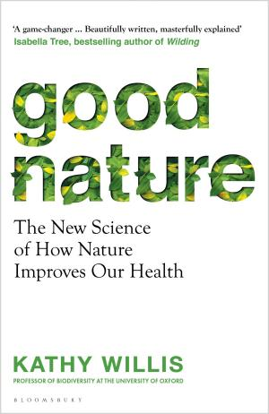
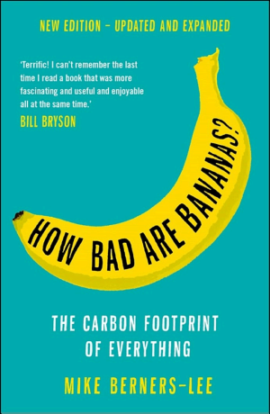
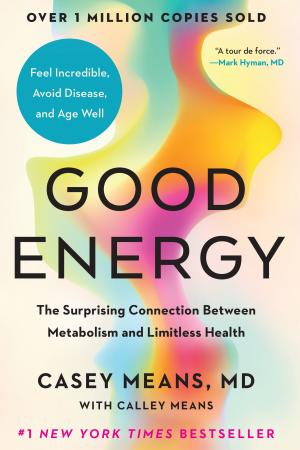
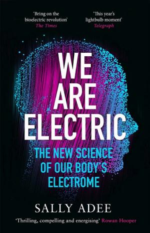

1.1 — Mobilità e Città
1.1.1 — L'euthymicrona del pendolare
Ogni mattina, centinaia di milioni di persone si mettono in moto. Letteralmente. Il tragitto casa-lavoro è il rituale più universale della civiltà moderna, eppure lo eseguiamo quasi in trance, ottimizzando per un'unica variabile: il tempo. Google Maps calcola quella che potremmo chiamare la brachistocrona del pendolare — il percorso più veloce tra due punti, come la celebre curva della meccanica classica che minimizza il tempo di caduta di una sfera (🏎 ff.138.1 La strada più veloce). Da qualche anno, l'app offre anche i tragitti con meno emissioni. Ma nessun navigatore calcola il percorso che massimizza la felicità. Nessuno, tranne la scienza.
Gli orizzonti naturali possiedono una “dimensione frattale” che calma il sistema nervoso, e scuole immerse nel verde hanno effetti benefici sullo sviluppo cognitivo dei bambini. Eppure nessun navigatore calcola il percorso che massimizza la felicità.
Kathy Willis, professoressa di biodiversità a Oxford e autrice di Good Nature, ha dimostrato che il modo più efficace per migliorare il benessere quotidiano è allungare leggermente il tragitto includendo parchi e viali alberati (😊 ff.138.2 La strada più felice). Non è spiritualismo: è neuroscienza quantificabile. Gli orizzonti naturali possiedono una “dimensione frattale” — la complessità geometrica di uno skyline — che risulta calmante per il sistema nervoso: i nostri sensi prediligono spazi ampi con qualche albero qua e là, come nella savana da dove proveniamo evoluzionisticamente. Scuole immerse nel verde hanno effetti benefici sullo sviluppo cognitivo dei bambini. ChatGPT, quando gli si chiede un nome per questo percorso ottimizzato per il benessere, conia euthymìcrona (εὐθυμος + χρόνος): il tempo del buon animo. Una parola che dovrebbe esistere in ogni lingua.
“Se le persone avessero un'app che suggerisce il percorso più felice anziché il più veloce, scegliere di passare da un parco invece che da un'arteria stradale avrebbe effetti misurabili sulla salute mentale di intere città.”
— Kathy Willis, Good Nature

Questo sposta il tema dalla mobilità alla progettazione quotidiana: non solo dove andiamo, ma come ci arriviamo. Nel corpus emerge una traiettoria coerente: prima ridurre l'attrito per chi cammina e pedala (🏙 ff.34 Ripensare le città), poi rendere visibile il costo reale degli spostamenti (🍌 ff.58 How bad are bananas?). La città non è sfondo: è una tecnologia comportamentale.
A Parigi, delle 13,8 MT di CO₂ annue legate alla mobilità, più del 10% si potrebbe evitare eliminando le code. Ad Amsterdam le emissioni sono 10 volte meno, perché vanno tutti in bici. La città non è sfondo: è una tecnologia comportamentale.
1.1.2 — La città a 15 minuti
Ma la felicità del tragitto è solo l'inizio. La vera rivoluzione è ripensare le città stesse. Negli ultimi decenni, urbanisti come Jan Gehl e Carlos Moreno hanno proposto un modello radicale: la città a 15 minuti, in cui ogni servizio essenziale — scuola, medico, alimentari, parco, lavoro — sia raggiungibile a piedi o in bicicletta in un quarto d'ora (🏙 ff.34 Ripensare le città). A Parigi, delle 13,8 MT di CO₂ annue legate alla mobilità, più del 10% si potrebbe evitare eliminando le code — magari con flessibilità di orari o smartworking. Ad Amsterdam le emissioni sono 10 volte meno, perché vanno tutti in bici. E i Paesi Bassi dimostrano che si può invertire rotta: negli anni ’70 erano convinti sostenitori delle automobili e avevano trasformato canali di 900 anni in strade; poi una serie di progetti ha dis-incentivato fortemente l’auto e ridato spazio a verde e canali (🚦 ff.34.2 Mobilità e traffico; 🚦 ff.34.3 Spazi vivibili).

1.1.3 — Ruote autonome
E le auto? Non scompariranno, ma cambieranno profondamente. La guida autonoma è già realtà in alcune città americane. Cruise, di proprietà di General Motors, ha lanciato un servizio di robotaxi 24 ore su 24 a San Francisco, e poi si è fermata dopo un incidente con un pedone che ha messo in luce la complessità normativa del settore (🚕 ff.60 La guida autonoma è qui!). ARK Invest stima che il mercato dei robotaxi potrebbe valere centinaia di miliardi di dollari: un'auto resta parcheggiata il 96% del tempo, e un veicolo autonomo che lavora 24 ore al giorno cambia l'equazione economica in modo radicale. In Cina, Haomo.ai sviluppa DriveGPT — la stessa tecnica di reinforcement learning da feedback umano che ha reso ChatGPT conversazionale, applicata alla guida. Tesla con il suo Autopilot, Waymo con il suo servizio attivo a Phoenix e San Francisco, e decine di startup cinesi stanno convergendo sulla stessa visione: la guida come servizio software, non come competenza umana.
Ma la rivoluzione più silenziosa è elettrica. La start-up olandese Lightyear One ha mostrato come piccole utilitarie con motori tradizionali possano inquinare meno di una Tesla Model S considerando l'intero ciclo di vita — spingendo l'ingegneria all'estremo per aumentare efficienze e distanze di percorrenza. ARK stima che Tesla sia comunque in vantaggio di tre anni rispetto ai competitor. Con 3 GWh di capacità (il 25% del totale), Tesla controlla una buona porzione dello stoccaggio energetico mondiale, puntando a 1.500 GWh entro il 2030. Durante la pandemia, le bici elettriche hanno venduto più delle auto elettriche negli Stati Uniti (500.000 bici contro 250.000 auto) (⚡ ff.5 Elettrizzante!). La transizione non è più una questione di se, ma di quanto velocemente.
Un'auto resta parcheggiata il 96% del tempo, e un veicolo autonomo che lavora 24 ore al giorno cambia l'equazione economica in modo radicale. Durante la pandemia, le bici elettriche hanno venduto più delle auto elettriche negli Stati Uniti: 500.000 bici contro 250.000 auto.
1.1.4 — Impronte e cieli
Resta però una domanda scomoda: quanto inquina davvero muoversi? Mike Berners-Lee, in How Bad Are Bananas?, traduce ogni azione in CO₂: un chilometro in auto produce circa 271 grammi di CO₂, uno in bici circa 16 — inclusa l'energia metabolica del ciclista
(🍌 ff.58
Le banane inquinano troppo?).
 Acquista su Amazon
Acquista su Amazon
E il mix energetico è proprio la variabile che decide se un’auto elettrica è davvero pulita. La Norvegia produce il 95% dell’elettricità con l’idroelettrico, la Francia il 75% con il nucleare: lì un veicolo elettrico è effettivamente a bassissime emissioni. Ma in Cina, India e Polonia le auto elettriche sono spesso, di fatto, auto a carbone. L’Italia, a parità di energia elettrica prodotta, inquina dieci volte più della Norvegia. C’è poi il lato tossico della produzione: fabbricare un’auto elettrica genera materiali tossici pari a tre volte quelli di un’auto tradizionale, per via dei metalli pesanti nelle batterie. Eppure il confronto complessivo resta impietoso: paragonati ai veicoli elettrici in Norvegia, i veicoli tradizionali emettono fino a 40 volte più CO₂. La tossicità si può imparare a gestirla; la CO₂ in atmosfera, meno (🚗 ff.32.5 Le auto elettriche: ecologiche o no?).
La COP26 di Glasgow ha fissato l'obiettivo del net zero entro il 2050. Ma il net zero è una promessa aggregata che nasconde enormi disuguaglianze: le emissioni pro capite degli USA sono 28 tonnellate, quelle del Malawi 0,1. La micro-mobilità — monopattini elettrici, e-bike, bike sharing — è il cavallo di Troia della decarbonizzazione urbana: incide poco nelle statistiche nazionali, ma trasforma il volto delle città (🌎 ff.1 Clima). L'80% degli spostamenti negli Stati Uniti ha una lunghezza inferiore ai 16 km — ne segue che e-bike, monopattini e scooter elettrici sono i mezzi più adatti per la maggioranza dei tragitti quotidiani. Le e-bike non sono giocattoli: sono l'infrastruttura invisibile della transizione. In Belgio, un ponte ciclabile di 400 metri ispirato alla Sezione Aurea, sospeso tra colline di scarti minerari, simboleggia questa rivoluzione lenta e bellissima.
E nel cielo? La presunta stagnazione tecnologica è una grande balla, come sostiene Works in Progress: il PIL non cattura il progresso perché con la tecnologia raggiungiamo di più spendendo meno. Il valore dei servizi digitali può raggiungere 25.000 euro all'anno — soldi che non spendiamo ma di cui dovremmo tenere conto. Eppure intorno a noi c'è solo tanta paura e negatività: la ricerca spaziale, la terapia genica, i progressi dell'AI vengono accolti con sospetto anziché con meraviglia (✈️ ff.59 L'ottimismo vola!). Joby Aviation ha completato i test sui componenti del suo eVTOL commerciale, un velivolo elettrico a decollo verticale che potrebbe ridefinire la mobilità aerea urbana già dal 2025. La mobilità del futuro sarà elettrica, condivisa, autonoma e lenta — cioè riprogettata per la vita, non per la velocità.
Il punto di connessione nascosto tra una pedalata nel parco e un robotaxi a San Francisco è che la mobilità non è mai stata solo un problema ingegneristico: è un problema antropologico. Come ci muoviamo dice chi siamo. Un popolo che vive in auto è un popolo atomizzato; un popolo che cammina è un popolo che si incontra. La euthymìcrona di Willis non è una curiosità accademica: è un manifesto urbanistico. Il percorso più felice passa per un parco, non per un'autostrada.
Un chilometro in auto produce circa 271 grammi di CO₂, uno in bici circa 16. Le emissioni pro capite degli USA sono 28 tonnellate, quelle del Malawi 0,1. Come ci muoviamo dice chi siamo.
1.2 — Ambiente ed Energia
1.2.1 — La carta di credito invisibile
Non demonizziamo la plastica: fa anche del bene, specie per conservare il cibo. Da italiani, poi, dobbiamo esserne un po' fieri — il Nobel per la Chimica di Natta nel 1963. Però, i suoi vantaggi — flessibilità e durabilità chimica — sono anche ciò che ne complicano separazione e riciclo. Google X propone un’AI per categorizzare scarti in base al tipo di plastica, e potenzialmente possiamo trasformare le bottiglie di plastica in diamanti (🥤 ff.130.1 Plastic is fantastic). Le fonti principali delle microplastiche sono pneumatici, tessuti sintetici, cosmetici, imballaggi alimentari. Microplastiche disperse in aria possono essere assorbite dalle piante, entrando nella catena alimentare. E se volete un Pokédex delle microplastiche, plasticlist.com elenca le microplastiche in quasi tutto, dal Vanilla Shake del Burger King al latte Oatly (🗑 ff.130.3 Microplastiche: da dove provengono?). Il resto finisce in discarica, negli oceani o — ed è la scoperta più inquietante — dentro di noi.
Gli effetti sulla salute emergono con chiarezza crescente. Le microplastiche induriscono le arterie, aumentando infiammazione ed eventi cardiaci. In particolare, il DEHP — uno ftalato presente nel PVC — si stima abbia causato 356.000 morti in più per malattie cardiovascolari, ossia il 13,5% delle morti totali globali (🩸 ff.130.5 Microplastiche induriscono arterie). L'arte documenta questa crisi: l'artista Mandy Barker cataloga rifiuti oceanici come installazioni museali; il designer Matthew Miller crea mappe socioeconomiche delle microplastiche per rendere visibile l'invisibile (🎨 ff.130.2 Arte riciclabile?). La danza macabra della modernità non è più tra la morte e i vivi, ma tra i vivi e i rifiuti che li sopravviveranno di migliaia di anni (💀 ff.130.4 La danza macabra).
1.2.2 — Il nodo gordiano dell'energia

L'energia è il nodo gordiano dell'ambiente. La transizione è in corso, e i numeri sono impressionanti: nel 2020, solare, idroelettrico ed eolico sono state le uniche fonti a crescere nella produzione di energia elettrica, con l'eolico a fare da padrone (+163 TWh). La Cina, come sempre, è su un altro livello: nel 2021 ha installato 227 GW di potenza solare, contro i 140 GW globali dell'anno precedente. I finanziamenti privati nella fusione nucleare hanno superato 1,8 miliardi di dollari con Commonwealth Fusion Systems in testa (☀️ ff.12 Sole, cuore e amore). L'Agenzia Internazionale dell'Energia identifica il solare come una delle sole tre tecnologie — su cinquanta monitorate — allineate con gli obiettivi climatici del 2030, confermando che la curva di adozione ha superato il punto di flesso. Lo stoccaggio segue: Ore Energy ha connesso la prima batteria ferro-aria al mondo, capace di 100 ore di accumulo usando solo ferro, aria e acqua (🌤️ ff.70 Il sole: soluzione o morte?). Il nucleare, nel frattempo, torna nell'equazione: la Banca Mondiale ha revocato il divieto storico sui finanziamenti all'energia nucleare, e la Cina necessita di 300 GW nucleari ogni 4 anni solo per tenere il passo con la propria domanda energetica.
Ma i numeri del nucleare nascondono un paradosso che sfida l'intuizione industriale. La legge di Wright — formulata nel 1936 dall'ingegnere aerospaziale Theodore Wright — sostiene che più produciamo qualcosa, più diventiamo bravi a farlo: i costi scendono con la scala. Per il solare funziona alla perfezione; per il nucleare, no. Prima del 1980 il costo di un impianto era di 1.175 dollari per kW; oggi supera i 5.000 dollari per kW — un aumento che non ha equivalenti in nessun altro settore energetico. La causa non è tecnologica ma regolatoria: decenni di paura post-Chernobyl e post-Fukushima hanno prodotto un apparato normativo così denso da invertire la curva di apprendimento. E il costo del combustibile è quasi irrilevante: produrre un terajoule di energia con l'uranio costa appena 20 dollari, contro i 26.000 del gasolio e i 12.000 del gas naturale. La materia prima è quasi gratis; è il permesso di usarla che costa una fortuna. Nel frattempo, la Cina costruirà 150 impianti nucleari nei prossimi sette anni — il 60% della crescita mondiale — superando gli Stati Uniti come primo sistema nucleare al mondo. L'Europa, con l'eccezione della Francia, guarda altrove: la Germania chiude reattori e solo la guerra in Ucraina ha costretto a posticipare alcune dismissioni. Non possiamo dipendere da crisi geopolitiche per concretizzare il futuro energetico (🚀 ff.46.2 Costi astronomici).
Produrre un terajoule di energia con l'uranio costa appena 20 dollari, contro i 26.000 del gasolio e i 12.000 del gas naturale. La materia prima è quasi gratis; è il permesso di usarla che costa una fortuna.
L’efficienza energetica non è solo una questione di reattori: è anche una questione di miliardari con una tesi chiara. Chris Sacca, 2.378esima persona più ricca al mondo secondo Forbes, ha fondato Lowercarbon Capital, un fondo che investe esclusivamente in soluzioni al cambiamento climatico. Nel suo portfolio: Carbon Engineering, che cattura CO₂ dall’atmosfera puntando a 100 dollari per tonnellata, la soglia critica per compensare i costi societari delle emissioni; Lilac Solutions, che estrae litio dalla brina con metodi 3 volte più efficienti di quelli tradizionali; e Solugen, che usa enzimi per convertire zuccheri in sostanze chimiche, classificata tra le 50 aziende più disruptive del 2024 da CNBC. Il serpente della conoscenza è sfuggito (👨🏫 ff.115.1 A lezione con un miliardario).
1.2.4 — Alberi, acqua e biodiversità
La fusione nucleare è la promessa perenne dell'energia: sempre a trent'anni di distanza, dice il vecchio scherzo. Ma qualcosa è cambiato. Un gruppo di ricercatori di DeepMind ha pubblicato su Nature un risultato che sposta il confine: un sistema di Deep Reinforcement Learning capace di controllare in tempo reale la posizione e la forma del plasma all'interno di un reattore tokamak, sostituendo i calcoli di fisica computazionale che tradizionalmente richiedono millisecondi preziosi tra una correzione e l'altra. L'intelligenza artificiale non si limita a replicare le configurazioni note — esplora forme di plasma mai tentate, inclusa una geometria a “fiocco di neve” che distribuisce il calore in modo più uniforme sulle pareti del reattore. Se la fusione è il Santo Graal dell'energia, l'AI potrebbe essere il cavaliere che finalmente lo trova (☢️ ff.28.1 Intelligenza artificiale per la fusione nucleare). Eppure, mentre inseguiamo il sole artificiale, rischiamo di perdere di vista quello vero — o meglio, di idealizzarlo. La scienza conferma che camminare nel verde riduce la ruminazione mentale legata alla depressione, che respiriamo fitoncidi capaci di abbassare il cortisolo, che lo shinrin-yoku giapponese — il bagno di foresta — produce effetti misurabili sul sistema immunitario. Ma Paolo Cognetti, ne Le otto montagne, ci ricorda una verità scomoda: chi vive davvero in montagna non dice mai “Natura” con la maiuscola reverenziale dei cittadini. Dice bosco, pascolo, torrente — parole concrete, senza aura mistica. Nella nostra frenesia digitale, abbiamo trasformato il verde in un'astrazione terapeutica, un antidoto da consumare come un integratore. Forse il rischio più sottile del cambiamento climatico non è solo la perdita degli ecosistemi, ma la perdita della capacità di nominarli con precisione (💚 ff.51.1 L'affabulazione per il verde). E a proposito di precisione nella rappresentazione della natura: qualcuno si è preso la briga di verificare se l'idrologia di Skyrim — il videogioco con oltre 60 milioni di copie vendute — fosse idrogeologicamente corretta, risalendo i fiumi virtuali fino alle sorgenti per verificare la coerenza del ciclo dell'acqua nel mondo di Tamriel. Il risultato è sorprendente: la simulazione tiene, almeno quanto molte delle nostre narrazioni sul “verde”. Quando un videogioco rispetta la gravità meglio del dibattito pubblico sull'ambiente, forse è il momento di ripensare chi racconta davvero la natura (🛶 ff.132.4 Tutto scorre anche Skyrim).


1.2.3 — Geoingegneria e clima
Ma la produzione di energia pulita non basta se non affrontiamo il condizionamento planetario. Il geoengineering — l'idea di iniettare aerosol di solfati nella stratosfera per riflettere la luce solare e raffreddare il pianeta — è discusso ai massimi livelli scientifici, nonostante il rischio di effetti collaterali imprevedibili come l'alterazione dei monsoni e la riduzione della fotosintesi (❄️ ff.56 Il condizionatore terrestre). Ma la verità scomoda è che siamo già geo-ingegneri — da millenni, senza saperlo. L’agricoltura ha innalzato la CO₂ atmosferica a 280 ppm ben prima dell’era industriale: i cicli naturali di glaciazione prevedevano 240 ppm, e senza i campi coltivati seimila anni fa il Canada sarebbe ancora sepolto sotto una coltre di ghiaccio. Il contenimento dell’ozono è forse l’esempio più riuscito di geo-ingegneria consapevole: il Protocollo di Montreal ha bandito i clorofluorocarburi fermando il pericoloso assottigliamento dello strato protettivo, evitandoci un mondo esposto a livelli letali di raggi UV. Eppure, nell’emisfero opposto della buona volontà, le nostre emissioni di solfiti stanno già modificando il clima in modo incontrollato — causando siccità in Africa come effetto collaterale dell’inquinamento del Nord (🕳️ ff.56.2 Siamo già geo-ingegneri). Il caso Climeworks è emblematico: l'azienda svizzera non è riuscita a catturare abbastanza CO₂ nemmeno per compensare le proprie emissioni operative. Una strada più promettente arriva dalla geologia: la meteorizzazione accelerata delle rocce può rimuovere CO₂ a meno di 100 dollari per tonnellata su larga scala. Come spesso accade, la tentazione di una soluzione tecnologica rapida distrae dall'unica soluzione strutturale: ridurre le emissioni alla fonte. La natura, però, offre le sue soluzioni: la riforestazione rimane il sistema di cattura della CO₂ più economico ed efficiente, e le piante — dalla vertical farming alle coltivazioni rigenerative — sono alleate silenziose nella lotta al cambiamento climatico (🌱 ff.33 Le piante ci salveranno?). Emergono anche strumenti finanziari inediti: Qarlbo Biodiversity ha completato il primo accordo USA per la vendita di “crediti di biodiversità” da una piantagione di pini — un meccanismo che trasforma la conservazione in asset negoziabile.
Le piante sono “lazzarone”: anche con abbondanza di sole, rallentano il metabolismo per non esaurire acqua e nutrienti. Le efficienze di conversione da CO₂ a materiale organico restano basse. Alcuni ricercatori stanno usando CRISPR per aumentare la conversione da CO₂ a carbonio stabilizzato. Mark Zuckerberg e Chan hanno finanziato l’Innovative Genomics Institute, fondato dall’ideatrice di CRISPR Jennifer Doudna (premio Nobel per la Chimica nel 2020) — il luogo dove gran parte della ricerca nell’applicazione di CRISPR si sta muovendo (🏭 ff.33.3 Piante modificate per catturare CO2).
Prima di giudicare il presente, serve un termometro lungo ventiduemila anni. Le ricostruzioni paleoclimatiche mostrano che alla fine dell’ultima glaciazione la temperatura media del pianeta salì di circa 4 °C — un balzo enorme in termini geologici, ma distribuito su millenni. La sequenza causale è nota: il cambiamento delle correnti oceaniche innescò un aumento della CO₂ atmosferica, che a sua volta favorì l’espansione della vegetazione e chiuse il ciclo glaciale. Ventimila anni fa la copertura vegetale terrestre era circa la metà di quella attuale: la natura non è sempre stata il giardino generoso che immaginiamo, e la storia climatica rivela oscillazioni brutali che ridimensionano la retorica dell’“equilibrio naturale”. Eppure, dentro questi numeri si nasconde un dato controintuitivo: un’atmosfera più ricca di CO₂ aumenta l’efficienza della fotosintesi fino a un plateau di circa 1000 ppm. Oltre quella soglia, i benefici si appiattiscono e i danni climatici esplodono. Siamo oggi a 425 ppm e in salita — lontani dal plateau fotosintetico, ma già oltre il livello che ha governato gli ultimi diecimila anni di civiltà umana (🌡️ ff.56.1 Gli ultimi 22k anni di termometro terrestre).
La lezione paleoclimatica è doppia. Da un lato, la Terra ha già attraversato riscaldamenti rapidi e ne è sopravvissuta — ma le civiltà complesse no. Le società agricole che dipendono da stagioni prevedibili, falde acquifere stabili e coste fisse non hanno l’elasticità dei ghiacciai: si spezzano. Dall’altro lato, la velocità attuale non ha precedenti nel record geologico. La deglaciazione ha impiegato millenni per i suoi +4 °C; noi rischiamo +1,5 °C in meno di un secolo. È come paragonare l’erosione di un fiume alla demolizione con esplosivo: stesso risultato, tempi incomparabili. Quando il corpus mostra che il geoengineering è già in corso senza progetto (🕳️ ff.56.2 Siamo già geo-ingegneri), e che la meteorizzazione accelerata delle rocce potrebbe diventare lo strumento più economico per la cattura della CO₂, il contesto paleoclimatico chiarisce l’urgenza: non stiamo sperimentando su un pianeta sconosciuto, stiamo forzando un sistema di cui conosciamo le soglie — e le stiamo superando a una velocità che il record fossile non ha mai registrato.
La deglaciazione ha impiegato millenni per i suoi +4 °C; noi rischiamo +1,5 °C in meno di un secolo. Non stiamo sperimentando su un pianeta sconosciuto: stiamo forzando un sistema di cui conosciamo le soglie — e le stiamo superando a una velocità che il record fossile non ha mai registrato.
“Parlare poco è naturale: i venti impetuosi non soffiano tutta la mattina; una pioggia torrenziale non dura tutto il giorno. L'acqua è la cosa più morbida del mondo, eppure dissolve la cosa più dura.”
— Lao Tzu, Tao Te Ching, versi 23 e 78
Wayne Dyer, nel suo La saggezza del Tao, spinge questa intuizione fino alle sue conseguenze più radicali. L’acqua fa una cosa sola: cade per gravità, cerca il punto più basso con un’umiltà che nessun altro elemento possiede. Non compete, non resiste, non progetta. Eppure, senza volerlo, idrata, irriga le piante, rende possibile lo sci, produce energia idroelettrica. L’acqua non ha un curriculum di risultati: ha una direzione, e i risultati arrivano come effetti collaterali della coerenza. È l’antitesi perfetta della cultura dell’ottimizzazione, dove ogni azione deve avere un KPI e ogni gesto un ritorno misurabile. Dyer legge nel Tao un principio che la fisica conferma: i sistemi più resilienti non sono quelli che combattono gli ostacoli, ma quelli che li aggirano, li erodono, li attraversano — esattamente come un fiume disegna il proprio corso senza mai consultare una mappa. In un’epoca ossessionata dal controllo, essere acqua non è rassegnazione: è la forma più sofisticata di strategia (☯️ ff.108.3 Essere acqua).

Eppure, c’è un modo radicalmente diverso di guardare la natura: non come risorsa da gestire, ma come calendario da decifrare. In Giappone esiste un sistema antico che divide l’anno non in quattro stagioni ma in settantadue micro-stagioni, ciascuna della durata di circa cinque giorni e ciascuna con un nome poetico che cattura un dettaglio irripetibile. 白露 (Hakuro), la rugiada bianca che brilla tra l’8 e il 12 settembre; 土潤溺暑 (Tsuchi uruōte mushi atsushi), la terra umida e il caldo soffocante di fine luglio; 魚上氷 (Uo kōri o izuru), i pesci che fanno capolino dal ghiaccio a metà febbraio. Dal qualunquista “non esistono più le mezze stagioni” si passa a vederne settantadue, con occhi da fanciullo che sanno cogliere in un raggio di sole tra gli alberi o in una particolare giustapposizione di colori il Perfect Day. Questa attenzione alla novità quotidiana non è decorativa: è una forma di resistenza percettiva contro l’anestesia della routine, e ricorda che la bellezza non si trova nell’evento straordinario ma nella capacità di notare ciò che c’è già (❄️ ff.134.3 Le 72 stagioni giapponesi). Le mezze stagioni, nel frattempo, stanno davvero scomparendo: l’allungamento dell’estate per effetto del riscaldamento globale sta alterando i cicli fenologici e comprimendo autunno e primavera in finestre sempre più strette, mentre la riflessione sul vivere lentamente suggerisce che la lentezza non è pigrizia ma percezione intensificata. Se la natura parla settantadue lingue in un anno, il problema non è che le stagioni scompaiono: è che abbiamo smesso di ascoltarle.
In Giappone esiste un sistema antico che divide l'anno in settantadue micro-stagioni, ciascuna di circa cinque giorni. Dal qualunquista “non esistono più le mezze stagioni” si passa a vederne settantadue: la bellezza non si trova nell'evento straordinario ma nella capacità di notare ciò che c'è già.
L'acqua è la metafora suprema della resilienza: non combatte gli ostacoli, li aggira, li erode, li attraversa. Ma è anche una risorsa in crisi: 2,2 miliardi di persone non hanno accesso sicuro all'acqua potabile secondo l'ONU, e le infrastrutture perdono in media il 30% dell'acqua trattata prima che raggiunga i rubinetti (💧 ff.112.5 Acqua da tutte le parti). E l'acqua che beviamo racconta più di quanto pensiamo. Le ricerche sulla correlazione tra durezza dell'acqua potabile e riduzione dei rischi cardiovascolari esistono dagli anni Sessanta, ma solo di recente siamo riusciti a comprenderle in profondità. Un semplice esperimento lo dimostra: prendendo i dati pubblici sui sali minerali dell'acqua della provincia di Bergamo e processandoli con ChatGPT, emerge una mappa inaspettata: frazioni con il primato del magnesio accanto a comuni quasi privi di calcio, fiumi sotterranei che disegnano confini geochimici invisibili a chi vive sopra di essi. L'AI, in questo caso, non scopre nulla di nuovo — riscopre ciò che la geologia sapeva già e la burocrazia aveva sepolto in tabelle illeggibili. Come scrive uno studio pubblicato su Foods, la durezza dell'acqua è un predittore cardiovascolare sottovalutato: ci preoccupiamo del sodio nel piatto e ignoriamo il magnesio nel rubinetto (🏞️ ff.112.4 Fiumi inattesi). L'acqua non ha un piano, non segue un algoritmo — segue la gravità, e nel farlo disegna geometrie frattali che ricalcano la struttura degli alberi e dei polmoni. Il clima non aspetta: con 57 milioni di settimane bianche all'anno nel mondo e le Alpi che concentrano il 52% dei giorni di sci globali, la riduzione della neve è una crisi economica prima ancora che ecologica (⛷️ ff.43 Lo sci sta sparendo con la neve?). Tra il 2018 e il 2023, l'elettricità ha contribuito al 63% della crescita della domanda energetica globale. L'elettrificazione non è una scelta ideologica: è una transizione termodinamica. La natura usa solo lo 0,5% della luce solare — 200 volte meno della tecnologia umana — il che suggerisce che il potenziale del solare è appena iniziato. La diffusione globale del solare vale già 500 miliardi di dollari l'anno — più della produzione aeronautica USA ($400 miliardi) e dei datacenter mondiali ($200 miliardi) messi insieme (⚡ ff.105 Elettricità e vita).
L'energia è diventata il vero banco di prova del futuro digitale. I dati della Federal Reserve riportano un aumento da $0,17 a $0,19 per kWh negli USA — un incremento che alcuni attribuiscono ai datacenter AI, ma che più correttamente riflette decenni di miopia energetica: Germania e Regno Unito producono meno elettricità di quarant'anni fa. Sam Altman, in Abundant Intelligence, sintetizza il dilemma in termini esistenziali: con 10 GW di calcolo, l'AI può curare il cancro — oppure diventare un tutor privato per ogni studente del mondo. Ma non può fare entrambe le cose. La nuova metrica emersa alla AI Conference di Shanghai — il watt-to-bit, ovvero l'efficienza energetica per unità di calcolo — suggerisce che la prossima svolta non sarà di chi accumula più GPU, ma di chi estrae più intelligenza per watt consumato (🌊 ff.136 On-da e-ner-ge-ti-caaa!). Un dato rende tangibile la sproporzione: l'energia di una singola query AI resta trascurabile sul piano individuale, ma la scala infrastrutturale sta cambiando (il confronto dettagliato tra consumo energetico biologico e computazionale è nel capitolo Tecnologia). E il lato ombra della transizione resta la finanza: metà degli 869 miliardi di prestiti bancari globali è andata a società che investono in nuove infrastrutture fossili, incompatibile con l'Accordo di Parigi.
I numeri non mentono, ma vanno contestualizzati. Il telefono cellulare consuma meno CO₂ in tutta la sua vita utile di quanto un'auto a benzina ne produca in un singolo viaggio Roma-Milano. I vaccini sono il miglior investimento che vi sia: si stima che ogni vaccino generi almeno 16 euro di ritorno. Le auto elettriche sono ecologiche, ma dipende molto da come le alimentiamo: in Norvegia (95% idroelettrico) e Francia (75% nucleare) le emissioni sono minime; in Cina e India, invece, le EV sono spesso auto a carbone (🔢 ff.32 I numeri non mentono). L'ecologia non è un sentimento: è un bilancio contabile.
Le startup climatiche sono il motore di questa transizione. Northvolt costruisce la più grande fabbrica di batterie europea in Svezia; Helion promette la fusione nucleare commerciale entro il 2028; i fondi di venture capital hanno investito 40 miliardi di dollari in climate tech nel solo 2023. La diffusione del solare ha raggiunto un tasso annuale di 500 miliardi di dollari — più grande della produzione di aerei USA e dei data center messi insieme (🌱 ff.16.4 Quali startup monitorare?). Dalla tavola periodica all'intelligenza artificiale, la chimica sta vivendo un rinascimento: l'AI può oggi simulare reazioni chimiche che prima richiedevano anni di esperimenti, accelerando la scoperta di nuovi materiali per batterie, celle solari e sistemi di cattura della CO₂ (🧪 ff.46 Elementale, Watson?). Materiali generati dall'AI potrebbero rendere le bollette energetiche più economiche riflettendo la luce con meta-emettitori progettati algoritmicamente — un ponte diretto tra l'intelligenza artificiale del capitolo Tecnologia e l'efficienza energetica della transizione verde. Ma il solare ha anche il suo lato ombra industriale: i maggiori produttori cinesi hanno licenziato in media il 31% dei lavoratori nell'ultimo anno, vittime della sovrapproduzione che ha fatto crollare i prezzi. Il punto di connessione nascosto tra una microplastica nel sangue e un pannello solare nel deserto è il concetto di esternalità: costi che chi produce e chi consuma non pagano, scaricati sull'ambiente, sulla salute, sulle generazioni future. La transizione energetica non è solo una questione tecnologica: è la correzione di un errore contabile lungo due secoli.
L'aria che respiriamo racconta la stessa storia. Vivere a Milano equivale a fumare 2 sigarette al giorno; ogni aumento di 10 μg/m³ di PM2.5 alza la probabilità di morte del 5%. Il cibo processato ha persino alterato la forma del palato nel corso di due secoli, riducendo la capacità respiratoria — russare non è solo un fastidio, è un segnale evolutivo. Ma se l'inquinamento è il veleno, la respirazione consapevole è l'antidoto più economico: il metodo 3-4-5 (inspira 3 secondi, trattieni 4, espira 5) abbassa il cortisolo in modo misurabile (💨 ff.87 Siamo quello che respiriamo). La qualità dell'aria è il ponte mancante tra urbanistica ed epidemiologia — un tema che nel capitolo Società ritorna nella forma dello stress cronico e della longevità.
Il paradosso più crudele della geoingegneria è che esiste già, ma nessuno l'ha progettata. In India e nel Sud-est asiatico, la Asian Brown Cloud — una coltre permanente di fuliggine, polveri e aerosol generata da combustione di biomassa e motori diesel — filtra la luce solare con un'efficienza che nessun programma di solar radiation management ha mai raggiunto. Sotto questa nebbia grigia non manca solo l'aria: manca il sole. L'ironia è strutturale: mentre i laboratori occidentali dibattono se iniettare solfati nella stratosfera per rallentare il riscaldamento, un miliardo di persone vive già sotto un cielo artificialmente oscurato, con conseguenze sanitarie devastanti e senza alcun beneficio climatico netto (☀️ ff.143.3 Sole e Asian Brown Cloud). E proprio l’intelligenza artificiale — la stessa che consuma energia e riscalda i datacenter — potrebbe diventare lo strumento più potente per decifrare questa complessità atmosferica. Il modello o1 di OpenAI ha raggiunto un QI di 100 al test MENSA — il livello di una persona media, un balzo enorme rispetto al QI di 60 di GPT-4. Il ricercatore della NASA che ha visto il proprio filtro per buchi neri — costato dieci mesi di lavoro — replicato in cinque minuti, incarna la reazione di un'intera generazione scientifica: non sostituzione, ma accelerazione violenta. Quando una macchina con QI nella norma può modellare dispersioni atmosferiche, analizzare pattern di aerosol e simulare scenari climatici in tempo reale, la geoingegneria smette di essere fantascienza e diventa un problema di governance (🎓 ff.103.2 NASA, MENSA e QI). Eppure, tra la potenza computazionale e la realtà, si apre una faglia estetica che il corpus aveva già intercettato. Quando Hugging Face ha ricreato e reso pubblico un modello di generazione immagini, l'account @Weirddalle ne ha esplorato i confini più grotteschi: relitti arrugginiti a forma di Teletubby sul fondale oceanico, urinali Razer Gaming, crocifissi lanciati nello spazio da SpaceX. Non è solo umorismo: è il momento in cui una tecnologia rivela la propria anima — e la nostra. Le immagini grottesche dell'AI generativa sono lo specchio deformante di una civiltà che produce più artefatti visivi in un giorno di quanti ne abbia creati l'intera umanità fino al 2020, con la stessa indifferenza con cui l'Asian Brown Cloud oscura il cielo senza che nessuno l'abbia commissionata (😱 ff.30.3 Qualche esempio meno divertente).
Ma quanto pesa davvero ogni gesto? Il corpus offre un convertitore brutale: 10 tonnellate di CO₂ all'anno = 27 kg al giorno = 1 kg all'ora = 20 grammi al minuto. Una banana “costa” 4 minuti di inquinamento, un uovo 32 minuti, un hamburger 2 ore, un chilometro in auto con traffico 2 ore. La dieta ad alto consumo di carne produce 2,62 tonnellate annue; quella vegana 1,05 — ma ridurre l'auto di 65 km a settimana ottiene lo stesso effetto del passaggio da carnivoro a vegano (⚖️ ff.61 La decrescita felice è impossibile?). Tradurre la CO₂ in tempo è un colpo di genio comunicativo: rende il bilancio ambientale leggibile come un orologio.
10 tonnellate di CO₂ all'anno = 27 kg al giorno = 1 kg all'ora = 20 grammi al minuto. Una banana “costa” 4 minuti di inquinamento, un hamburger 2 ore. Tradurre la CO₂ in tempo è un colpo di genio comunicativo: rende il bilancio ambientale leggibile come un orologio.
Ma se il bilancio quotidiano è eloquente, quello macroeconomico è devastante. Un documento di lavoro del National Bureau of Economic Research ha ricalcolato l'impatto reale del riscaldamento globale e il risultato è sei volte peggiore delle stime precedenti: ogni grado centigrado di aumento cancella il 12% del PIL globale, un ordine di grandezza che rende il cambiamento climatico non solo una crisi ecologica ma la più grande minaccia economica della storia moderna. La sproporzione tra il costo dell'azione e il costo dell'inerzia è ormai misurabile: investire un euro nella transizione oggi risparmia tra tre e sette euro di danni futuri, eppure il sistema finanziario continua a scontare il rischio climatico come se fosse lineare, quando ogni evidenza mostra che è esponenziale. C'è poi un paradosso della pulizia che pochi considerano: man mano che riduciamo l'inquinamento atmosferico — obiettivo sacrosanto per la salute pubblica — eliminiamo anche gli aerosol che riflettono parte della radiazione solare, aumentando l’esposizione UV e accelerando il riscaldamento di superficie. È il tipo di feedback loop che rende la governance climatica così vertiginosa: ogni soluzione genera un nuovo problema, e l'unica strategia robusta è quella che tiene insieme decarbonizzazione, adattamento e monitoraggio degli effetti collaterali.
Eppure, dentro questo labirinto di feedback, il capitale ha già scelto la direzione. L'Agenzia Internazionale dell'Energia stima che gli investimenti globali in energia pulita supereranno i 3 trilioni di dollari nel 2024 — il doppio di quanto destinato ai combustibili fossili. Non è più una scommessa ideologica: è arbitraggio finanziario. Il solare costa meno del carbone in quasi ogni mercato del mondo, e la curva di apprendimento continua a scendere. Ma la transizione non si gioca solo sui tetti e nei deserti. Nelle case europee, la pompa di calore sta riscrivendo il bilancio energetico domestico: una singola unità abbatte quasi 3.000 kg di CO₂ all'anno, eliminando la caldaia a gas senza sacrificare il comfort. E c'è un'altra conversione che nessuno vuole fare: sostituire il manzo con il pollo riduce l'impronta carbonica dell'80%, ma richiede duecento volte più animali. Il dilemma è matematicamente perfetto e moralmente irrisolvibile — esattamente il tipo di trade-off che la transizione energetica impone a ogni livello, dal piatto alla centrale elettrica.
Se il costo del clima è sottostimato, quello dell'intelligenza artificiale è sovrastimato — almeno sul piano energetico. Il dibattito pubblico dipinge l'AI come una voragine elettrica, ma i dati raccontano un'altra storia: una singola ricerca su ChatGPT equivale allo 0,00007% dell'impronta elettrica annuale pro capite nel Regno Unito. Il dato non assolve l'industria — 50 milioni di GPU H100 a pieno regime consumerebbero 35 GW, circa il 2% del consumo elettrico mondiale — ma ridimensiona la retorica apocalittica: il problema non è la singola query, è la scala infrastrutturale, ed è un problema di pianificazione energetica, non di rinuncia tecnologica. Il vero rischio è che la narrazione distorta dell'AI energivora distolga l'attenzione dalle fonti di consumo realmente massive e strutturalmente più difficili da decarbonizzare, come il riscaldamento domestico e il trasporto merci.
C’è un paradosso che sfugge alla retorica della crescita infinita: il consumo pro capite di energia è sostanzialmente stagnante da due secoli. La dematerializzazione — dallo scaffale fisico al cloud, dal faldone al PDF — ha compensato ogni nuova fame di watt. L’efficienza energetica degli edifici migliora, il remote working taglia i pendolari, e il costo dell’energia resta abbastanza alto da funzionare come freno naturale. Dopo l’invasione dell’Ucraina, i prezzi alla pompa e le bollette domestiche hanno fatto il resto: abitudini che sembravano incrollabili — il SUV per portare i figli a scuola, il termostato a ventiquattro gradi — si sono sgretolate in un trimestre. Eppure l’energia non è ancora accessibile come la potenza di calcolo: un transistor costa un milionesimo di quanto costava negli anni Settanta, un kilowattora costa più o meno lo stesso. E qui si apre una voragine sanitaria che pochi collegano alla bolletta elettrica: negli Stati Uniti il 20% del PIL finisce in spese mediche — un dollaro su cinque non costruisce strade né scuole, ma paga pronto soccorso, farmaci e assicurazioni. La salute conta più dell’energia nel bilancio nazionale, eppure il dibattito pubblico tratta le due voci come compartimenti stagni. Il punto di contatto è sottile ma strutturale: quando l’aria è sporca e il cibo ultra-processato, la spesa sanitaria sale e la produttività scende — un circolo vizioso che nessuna transizione energetica può spezzare da sola (💡 ff.50.4 Consumisti ma non di energia).

Nel capitolo ambiente, un filo robusto del corpus è la convergenza tra energia e salute pubblica: ridurre emissioni e ridurre esposizioni tossiche non sono due agende separate. Dalla qualità dell'aria urbana alle microplastiche, la stessa infrastruttura che produce crescita economica può anche ridurre carico sanitario, se misurata con metriche di lungo periodo e non solo con costi immediati (🌎 ff.1 Clima; 🥤 ff.130.1 Plastic is fantastic).
Ma la convergenza tra energia e geopolitica ha un volto concreto che troppe analisi ignorano: il cibo. Una mappa di Visual Capitalist sull’Ucraina rivela che il 70% del territorio è coltivato, e che Russia e Ucraina insieme esportano un terzo del grano e un quinto del mais mondiale. Il Libano importa il 50% del proprio grano dall’Ucraina; la zona di Donets’k, epicentro del conflitto, concentra gran parte delle infrastrutture e della popolazione. Controllare quei territori non significa solo muovere confini: significa decidere chi mangia e chi no. Le reti di gas che attraversano il suolo ucraino si sono ridotte da 120 a 40 miliardi di metri cubi dal 2001, un declino che precede l’invasione e racconta una dipendenza energetica in erosione lenta, poi accelerata dalla guerra. La lezione è brutale: la sicurezza alimentare e quella energetica non sono capitoli separati della geopolitica, sono lo stesso capitolo letto da angolazioni diverse (🗺 ff.14.1 Un piccolo approfondimento sull’Ucraina). E se il grano era la materia prima delle rivoluzioni agricole, i dati lo sono di quella algoritmica. Sam Korus di Ark Invest, citando Technological Revolutions and Financial Capital di Carlota Perez, traccia una genealogia rivelatrice: ogni rivoluzione tecnologica genera nuovi input e nuovi output. Il ferro per la prima industrializzazione, il vapore per la seconda, il petrolio per la terza, i microchip per la quarta. Per la quinta, quella dell’intelligenza artificiale, l’input decisivo sono i dati. Ma chi possiede i dati? Gli scandali dei cookies e di Cambridge Analytica hanno aperto la questione della proprietà digitale; ora che Stable Diffusion genera immagini “imparando” da contenuti pubblici senza darne credito, la domanda si fa incandescente. Siti come StableAttribution tentano di dare a Cesare quel che è di Cesare, identificando quali immagini abbiano ispirato il generatore di turno. La transizione è chiara: dai possedimenti terrieri alla proprietà privata, dai mezzi di produzione alle fabbriche, dalla potenza di calcolo ai social, dal possesso dei dati al metaverso. Chi controlla il campo di grano ucraino e chi controlla il dataset di addestramento di un modello linguistico stanno giocando lo stesso gioco, a scale diverse (🌮 ff.55.2 Campi da arare e dati da reclamare).
La biologia sintetica spinge i confini dell'immaginazione con risultati che intrecciano ecologia e ingegneria (la trattazione approfondita di mammut resuscitati, DNA come supporto di archiviazione e l'efficienza cervello-vs-supercomputer è nel capitolo Tecnologia). Al MIT, Neri Oxman unisce design, biologia e ingegneria per creare strutture prodotte direttamente da organismi viventi — calzature fatte da vermi, padiglioni tessuti da bachi da seta — in una convergenza che rende obsoleta la distinzione tra fabbricato e cresciuto (🔺 ff.122.4 Nike fatte da vermi). Persino l'acquacoltura diventa intelligente: l'AI di Tidal rileva pesci malati monitorando il nuoto inclinato in tempo reale. Dalla tundra dei mammut al laboratorio del DNA, il filo è lo stesso: ogni volta che la tecnologia ascolta la biologia invece di ignorarla, il risultato è più elegante, più efficiente e meno costoso. Ma la biologia non si limita a farsi ascoltare: ricambia il favore. L’Internet delle Cose raggiungerà 30 miliardi di connessioni entro il 2030, il triplo di quelle attuali, e tra queste ci saranno sensori che nessun ingegnere avrebbe disegnato: ostriche. Il progetto MolluSCAN ha connesso i molluschi bivalvi al cloud, misurando in tempo reale l’apertura e la chiusura delle valve come proxy della qualità dell’acqua. Le ostriche reagiscono a variazioni chimiche impercettibili con una sensibilità che nessun sensore elettronico eguaglia, e i ricercatori hanno scoperto che i loro pattern di chiusura predicono ondate di calore con giorni di anticipo. I molluschi non “collaborano” per generosità: semplicemente vivono, e nel farlo producono dati ambientali di precisione straordinaria. Altrove, in Corea, una startup ha dimostrato che telecamere da appena 1 MB sono sufficienti a monitorare l’inquinamento atmosferico urbano, trasformando ogni lampione in una stazione di rilevamento. Il paradigma si rovescia: non portiamo la tecnologia nella natura, lasciamo che la natura diventi tecnologia (🦪 ff.84.4 Molluschi e altri sensori).

La transizione energetica ha un problema che nessun pannello solare può risolvere da solo: il tempo. Il sole splende di giorno, il vento soffia a intermittenza, ma la domanda di elettricità è costante — e nelle ore di punta serale raggiunge il picco proprio quando le rinnovabili si spengono. Senza stoccaggio, ogni gigawatt installato resta ostaggio della meteorologia. La IEA stima che serva un aumento di sei volte della capacità globale di accumulo a batteria entro il 2030 per rispettare gli obiettivi climatici fissati alla COP28 ( Aumento di sei volte dell'accumulo di energia da batterie necessario entro il 2030 ). È una cifra che traduce un concetto astratto in ingegneria concreta: non basta produrre elettroni puliti, bisogna parcheggiarli da qualche parte e rilasciarli quando servono. Il litio domina il mercato attuale, ma è costoso, concentrato geograficamente e inadatto allo stoccaggio di lunga durata. La frontiera più promettente arriva da una chimica sorprendentemente primitiva. A Delft, nei Paesi Bassi, Ore Energy ha collegato alla rete la prima batteria ferro-aria al mondo: un sistema che usa solo ferro, aria e acqua per offrire fino a 100 ore di stoccaggio energetico pulito ( Ore Energy connette la prima batteria ferro-aria: 100 ore di stoccaggio ). Cento ore significano quattro giorni interi di autonomia — abbastanza per coprire una settimana nuvolosa o un'ondata di calore senza vento. Il ferro è il quarto elemento più abbondante sulla crosta terrestre, non richiede miniere in Congo né raffinerie in Cina, e il suo costo al chilo è una frazione di quello del litio. È la stessa logica della fotosintesi: la natura non usa materiali rari, usa quelli disponibili ovunque e li combina con eleganza. Se la batteria ferro-aria scalerà, il collo di bottiglia della transizione energetica non sarà più la generazione ma la volontà politica di installarla. E la domanda vera diventa un'altra: perché il mondo investe ancora miliardi in infrastrutture fossili quando la soluzione è letteralmente fatta di ruggine e aria?
La curva del fotovoltaico ha superato il punto di non ritorno economico. Secondo la International Energy Agency, i pannelli solari rientrano tra le tre sole tecnologie — su cinquanta monitorate — in linea con gli obiettivi climatici del 2030. Ma il dato più eloquente non è ambientale: è finanziario. Il costo dell'elettricità solare è diventato negativo in alcune regioni — installare pannelli non è più una spesa, è un investimento che genera reddito dal primo giorno (💣 ff.70.3 Che bomba i pannelli solari!). Ma se l'energia pulita cresce in modo esponenziale, la biologia fa un salto concettuale ancora più profondo. Al Tufts University, Michael Levin ha dimostrato che manipolando i canali ionici sodio-potassio si può indurre la crescita di un occhio completamente funzionante sul dorso di una rana. Non è fantascienza: è bioelettricità. I campi elettrici possono localizzare un tumore, rigenerare un arto amputato o guidare la crescita di xenobot — organismi viventi progettati al computer e assemblati da cellule staminali. La nascita della biologia programmabile bypassa il DNA e riscrive le regole dello sviluppo (⚡ ff.105.3 Elettroma). Eppure, proprio mentre la tecnologia accelera, c'è chi insegna a rallentare. Boyd Varty, nella riserva naturale di Londolozi in Sudafrica, organizza esperienze di crescita tra leoni e paesaggi atavici. Il suo principio, raccontato a Tim Ferriss, è controintuitivo: quando un progetto funziona, disinvesti e lascia correre — jiu-jitsu energetico sulle cose. Rallentare proprio quando i leoni (o le notifiche) accelerano: una lezione che la natura offre gratis, se solo ci fermiamo ad ascoltarla (🦁 ff.141.2 Rallentare se inseguiti da leoni).
Gli xenotrapianti aggiungono un capitolo ancora più radicale perché obbligano a tenere insieme biotecnologia, etica e scarsità sanitaria. La modifica genetica del maiale ha reso possibile il primo trapianto di cuore senza rigetto immediato, segnalando che il confine tra specie può essere riprogettato in laboratorio prima ancora che in sala operatoria (🐷 ff.25.1 Trapianti di cuore di maiale). Ma il valore editoriale della nota non è l'eccezione clinica: è la scala del bisogno. Negli Stati Uniti circa 60.000 persone sono in attesa di trapianto e la disponibilità resta intorno al 65%; i reni pesano per il 83% della domanda, quindi il collo di bottiglia non è episodico, è strutturale (🫀 ff.25.2 La dimensione del problema dei trapianti). In questo quadro lo xenotrapianto non va venduto come miracolo, ma come infrastruttura potenziale per ridurre una mortalità evitabile. Se funzionerà su larga scala, non cambierà solo un protocollo medico: cambierà la grammatica stessa del “donatore compatibile”, spostandola da evento raro a sistema progettato.
La connessione tra uomo e natura passa spesso per metafore che sono più di metafore. L'albero, ad esempio, non è solo ecosistema: è architettura cognitiva. Da Adamo ed Eva alla teoria della conoscenza medievale, fino ai decision tree algoritmici, le ramificazioni vegetali hanno ispirato l'uomo a definirsi, a capire e capirsi. Shannon Mattern, antropologa alla New School di New York, ha raccolto in Tree Thinking la storiografia di questo rapporto millenario — un filo che lega la botanica alla filosofia della mente senza mai spezzarsi (🌲 ff.33.1 La valenza filosofica e conoscitiva degli alberi). Se gli alberi ci insegnano a pensare, la COP28 ci ricorda che dobbiamo anche agire. Ventidue nazioni — Regno Unito, Francia, Stati Uniti — hanno promesso di triplicare il nucleare entro il 2050, e l'obiettivo è 3x anche per la produzione di energia rinnovabile entro il 2030: undici terawatt, pari a circa 96.000 TWh l'anno, contro i 137.000 TWh che le fonti fossili ancora coprono. Per elettrificare l'Europa servono sei volte le pompe di calore attuali, quindici volte i veicoli elettrici. Alla conferenza sono stati promessi cento miliardi di dollari di investimenti — Alterra trenta, Adani Green Energy ventidue — ma per la transizione ne servirebbero venti volte tanto ogni anno (🌐 ff.81.3 Buoni propositi di COP28). Eppure, mentre i negoziatori discutono di terawatt, altrove il fuoco ha ancora tre facce elementari: sopravvivenza, dove un falò di plastica e rifiuti scalda chi non ha altro; sussistenza, nelle “terre del fuoco” dell'Azerbaijan e delle sue Flame Towers; trascendenza, sulle pire funerarie di Varanasi. Quando il fuoco è plastica e l'aria un muro grigio, crollano i presupposti biologici che ogni strategia climatica dà per scontati (🔥 ff.143.4 Fuoco (3 facce)). Dal decision tree alla COP, dal ramo alla fiamma: la natura non è sfondo, è grammatica. E la grammatica va letta prima di riscriverla.
Da settant'anni disponiamo già di una soluzione per generare energia a emissioni quasi zero: il nucleare a fissione. Eppure basta un caso simbolo — Fukushima, le chimere di frutta fluorescente — per bollare un intero campo di ricerca. Josh Wolfe, co-fondatore di Lux Capital, propone un rebrand radicale: non più “nucleare” ma energia elementale. L'opinione pubblica, in effetti, sembra fare inversione a U: la notizia del primo reattore a fusione net-positive ha dato una scossa al dibattito, e ventidue nazioni alla COP28 hanno promesso di triplicare la capacità nucleare entro il 2050. Il problema non è mai stato la fisica: è sempre stato il racconto (☢ ff.46.1 Nucleare: un rebrand necessario). Intanto, nella Pianura Padana l'aria sembra uscita da Mordor. I dati, però, raccontano una storia più sfumata: la media mobile annuale delle concentrazioni di PM2,5 a Milano mostra un leggerissimo calo, nessuna accelerazione catastrofica. Resta il fatto che vivere a Milano equivale a fumare due sigarette al giorno — ogni dieci microgrammi per metro cubo di PM2,5 in più aumentano del cinque per cento la probabilità di morire. A New Delhi va molto peggio: un Air Quality Index di 450 corrisponde a trenta sigarette quotidiane. L'aria che respiriamo è un indicatore brutale di disuguaglianza: il privilegio più grande non è un gadget, è un polmone sano (🌬 ff.87.2 Quanto è inquinata l'aria in Italia?). Ed eccoci al paradosso finale: quando elettricità e servizi smettono di essere invisibili, capisci che la vera ricchezza è l'ecosistema — aria pulita, sole visibile, acqua usabile. Non la natura hipster da città, ma una natura chimica, elementale, che sta sotto l'Io. Il lusso del futuro non è un orologio: è respirare senza filtro (🌿 ff.143.1 Lusso naturale).
Respirare senza filtro, sì — ma quante volte? Esiste una costante biologica che attraversa l’intero regno animale come un metronomo invisibile: ogni organismo vivente, dal batterio alla balenottera azzurra, consuma circa cento milioni di cicli respiratori nell’arco della propria esistenza. Il topo li brucia in due anni con un cuore che batte seicento volte al minuto; la balena li centellinà in ottant’anni con sei respiri al minuto. La matematica è spietata e democratica: il prodotto tra frequenza cardiaca e durata della vita converge sullo stesso numero, come se la natura avesse fissato un budget energetico universale e lasciasse a ciascuna specie la libertà di spenderlo in fretta o con parsimonia. Geoffrey West, fisico del Santa Fe Institute, ha dimostrato che questa legge di scala segue un esponente di tre quarti — lo stesso che governa il metabolismo, la velocità di crescita e persino il ritmo dell’innovazione nelle città. Il parallelo è vertiginoso: se il cuore di un colibì e quello di un elefante obbediscono alla stessa equazione, forse anche i cicli economici e le stagioni culturali seguono ritmi analoghi, solo compressi o dilatati. Le 72 micro-stagioni giapponesi, già incontrate in queste pagine, dividono l’anno in segmenti di cinque giorni ciascuno — un calendario che sembra intuire ciò che la biofisica ha poi misurato: la natura non improvvisa, scandisce. E il lusso più grande non è rallentare il contatore dei respiri, ma rendere ogni singolo ciclo meno tossico (🫁 ff.76.1 Cento milioni di respiri).
Cinquantasette milioni di settimane bianche ogni anno nel mondo, eppure il contatore globale delle giornate sugli sci resta fermo a quattrocento milioni. Le Alpi ne assorbono il cinquantadue per cento — duecentodieci milioni — ma il loro primato poggia su un fondamento fragile: la neve. In Italia gli sciatori sono meno di cinque milioni, la metà di Francia e Austria. L’industria dello sci è un termometro climatico involontario: quando le Dolomiti perdono quota, non è il turismo a tremare, è un intero ecosistema montano che arretra (⛷ ff.43.1 Lo sci sta sparendo con la neve?). Dalla montagna al piatto: nelle Blue Zone studiate da Dan Buettner — Sardegna inclusa — il segreto della longevità non è un superfood esotico ma una zuppa quotidiana di fagioli, carote, cipolle e origano. La famiglia Melis è entrata nel Guinness dei Primati con un’età media di novantatré anni tra nove fratelli. Il minestrone centenario dimostra che la chimica della longevità è banale: fibre, antiossidanti, ritualità del pasto condiviso. In un’epoca di integratori e biohacking, il cibo più potente costa meno di un euro al giorno (🥣 ff.92.1 Fagioli di bazar). E poi c’è il movimento. Uno studio su settecentocinquantamila persone ha misurato il fitness metabolico con il test di Bruce: chi sosteneva quattordici MET dopo vent’anni moriva quattro volte meno di chi si fermava a cinque. Dieci MET corrispondono a correre dieci chilometri in un’ora — niente di eroico, ma sufficiente a spostare drasticamente la curva di sopravvivenza. Il corpo umano non chiede imprese: chiede costanza. E tra una zuppa e una corsa, la natura offre già tutto il necessario per arrivare lontano (🏃 ff.120.1 Quanto correre per scappare alla morte?).
Il carbonio non scompare: cambia indirizzo. Le foreste coprono l’otto per cento delle terre emerse e trattengono circa 272 gigatonnellate di carbonio, ma quando un albero muore parte di quel deposito torna nell’atmosfera durante la decomposizione. Uno studio dell’Università di Zurigo pubblicato su Science calcola che piantando 0,9 miliardi di ettari potremmo stoccare fino a duecento gigatonnellate — quasi sette anni delle nostre emissioni attuali. Eppure la vera sorpresa non è la foresta: è la torbiera. Occupando appena il due per cento delle terre emerse, le torbiere immagazzinano 415 gigatonnellate di carbonio — il cinquanta per cento in più delle foreste con un quarto della superficie. La differenza è strutturale: dove l’albero rilascia carbonio marcendo, la torba lo sigilla in condizioni anaerobiche per millenni. Startup come Dendra usano droni, AI e analisi satellitari per ottimizzare semina e biodiversità, mentre Carbo Culture lavora a biocarbone stabilizzato che impedisce la dispersione di CO₂ nei processi di marcitura. Il paradosso è che la soluzione più potente al cambiamento climatico non è la più spettacolare: è un terreno fradicio e poco fotogenico (🍁 ff.33.2 Raccoglitori di CO2). C’è poi un angolo stagionale che pochi considerano: i sei milioni di alberi di Natale venduti ogni anno in Italia generano un piccolo ecosistema economico con inflazione propria — un abete di sei metri può costare duemila euro. Ma il vero costo natalizio non è la pianta: è lo spreco alimentare e i regali inutili che accompagnano le feste, moltiplicando l’impronta carbonica domestica proprio nel momento in cui la retorica del buono e del bello raggiunge il picco (🌿 ff.79.2 Ecologia e economia degli alberi di Natale). Dalla torbiera all’abete addobbato, il filo è lo stesso: ogni volta che ignoriamo il ciclo del carbonio negli oggetti quotidiani, trasformiamo un gesto innocuo in debito ambientale silenzioso. E lo stesso principio vale a tavola: le patate contengono venticinque volte il potassio della pasta, e raddoppiare l’assunzione giornaliera di potassio — da duemiladuecento a quattromilatrecento milligrammi — abbassa del quaranta per cento il rischio cardiovascolare. Il rame è due volte più concentrato in una dieta vegetariana che in una onnivora, e il fegato batte la bistecca su quasi tutti i micronutrienti. Persino il nome “SPA” viene da Salut Per Aqua, omaggio romano ai minerali disciolti nell’acqua termale. Il corpo non chiede calorie: chiede equilibri (⚒ ff.113.3 Una dieta mineraria?).
Ma quanto manca, esattamente, alla meta? Bill Gates, in Come evitare un disastro climatico, riduce l’intera questione a due numeri: 51 miliardi di tonnellate di CO₂-equivalenti emesse ogni anno, e zero — l’obiettivo. Cinquantuno miliardi è il punto di partenza; zero è la destinazione. La forbice tra i due è il più grande progetto ingegneristico della storia umana, eppure la maggior parte delle persone non conosce né il dato corrente né il traguardo. Gates nota che anche le oscillazioni annuali — un miliardo in più, due in meno — sono rumore statistico rispetto alla scala del problema. Non bastano incrementi graduali: servono rivoluzioni sistemiche nei trasporti, nell’energia, nell’agricoltura e nei materiali. E ogni rivoluzione ha un costo minerale che pochi calcolano (📉 ff.1.2 Da 51 miliardi a 0). Il paradosso è che la transizione verde dipende da catene di approvvigionamento tutt’altro che verdi. La Cina controlla l’80% della produzione mondiale di pannelli solari e domina l’estrazione e la raffinazione del litio. Nel mercato delle batterie elettriche, tre aziende da sole coprono oltre il sessanta per cento delle quote globali: CATL con il 35%, LG con il 14,4%, BYD con l’11,8%. L’Europa ha iniziato a colmare il divario, ma la struttura resta asimmetrica, quasi paretiana: l’80% delle risorse critiche concentrate nel 20% dei paesi. Per ogni turbina eolica montata nelle Fiandre c’è una miniera di cobalto in Congo che lavora in condizioni che l’Occidente preferisce non guardare. La transizione energetica non è solo un problema tecnologico: è un nodo geopolitico, e chi controlla i minerali controlla il futuro (⛏ ff.42.1 Minerali preziosi?).
Eppure la transizione non si gioca solo nelle miniere e nelle fabbriche: si gioca nelle scelte quotidiane di ciascuno di noi. Quanto inquina un viaggio da New York alle Cascate del Niagara? Dipende dal mezzo — e dal carburante del ciclista. In bicicletta, alimentandosi a banane, si emettono appena cinquantatré chilogrammi di CO₂-equivalenti. Passando ai cheeseburger lo stesso tragitto in bici sale a duecentocinquanta chili: la carne moltiplica le emissioni quasi cinque volte rispetto alla frutta. Il treno ne produce trecentotrenta, un’auto efficiente cinquecento, l’aereo millecento. Il dato più controintuitivo è che una macchina piena può battere il treno semivuoto, ma un singolo incidente stradale — con danni, soccorsi e coda — può generare fino a cinquanta tonnellate di CO₂, cinque anni di emissioni individuali cancellati in un istante. Volare poi sconta un moltiplicatore che i biglietti non dichiarano: le emissioni ad alta quota riscaldano da una volta e mezza a due volte di più rispetto a quelle a livello del mare. Il consiglio più ecologico, paradossalmente, è la carrozza a cavalli (⛲ ff.58.3 Andare alle Cascate del Niagara). E mentre calcoliamo grammi di CO₂ per chilometro, il termometro riscrive il calendario. L’estate del 2023 è stata statisticamente tra le più calde mai registrate, tanto che Niall Ferguson su Bloomberg ha firmato un necrologio della tintarella mediterranea: il caldo insopportabile sta uccidendo la vacanza in riviera con la stessa logica con cui uccide la settimana bianca sulle Alpi. La stagione balneare e quella sciistica convergono verso lo stesso destino — vittime di un clima che non rispetta più i confini del calendario. Il paradosso è che continuiamo a progettare le vacanze come se le stagioni fossero immutabili, mentre la natura ci avvisa, anno dopo anno, che il contratto è scaduto (🌴 ff.70.1 La fine dell’estate).
1.3 — Cibo e Fashion
1.3.1 — Dal microbioma al piatto
Il microbioma — lo strato di microbi che riveste l'intestino — è sempre più connesso con umore, glicemia e malattie. I microbi controllano la velocità con cui molecole come gli zuccheri entrano in circolo, e le fibre favoriscono un microbioma sano e vario, con minori infiammazioni. Come altri cibi non processati, i legumi sono ricchi di fibre; e i microbi regolano persino la pressione cardiaca. Quello che mangiamo è il fertilizzante del microbioma — o il suo pesticida (🧠 ff.92.2 Un organo in più: il microbioma).
Le Blue Zones — Sardegna, Okinawa, Ikaria, Nicoya, Loma Linda — confermano questa biologia con i numeri della longevità. In Sardegna, la famiglia Melis è entrata nel Guinness dei Primati con una media di 93 anni tra 9 fratelli. Dan Buettner, giornalista del National Geographic ed esperto di zone blu, identifica pattern ricorrenti: legumi quotidiani, piccole porzioni, pasti condivisi, niente fretta (🧓 ff.92.2 La dieta dei centenari). Ma se le zone blu offrono il modello empirico della longevità, cosa succede quando chiediamo a un'intelligenza artificiale di progettare la dieta perfetta partendo dai numeri? L'esperimento è disarmante nella sua semplicità: 100 grammi di proteine, 40 grammi di fibre, micronutrienti essenziali, il tutto in circa 2.200 kcal. Il risultato di GPT non prescrive né rinunce eroiche né superfood esotici: è una composizione ordinata di legumi, verdure a foglia, cereali integrali, pesce azzurro e frutta secca — esattamente ciò che i centenari di Okinawa e Sardegna mangiano da generazioni senza bisogno di algoritmi. La macchina, interrogata senza preconcetti culturali, converge sulla stessa soluzione della tradizione. Non è coincidenza: è la conferma che la saggezza alimentare è un problema di ottimizzazione che l'umanità ha già risolto empiricamente, e che l'AI riscopre per via matematica. Come direbbe Buettner: non serviva un modello linguistico da miliardi di parametri per capire che i fagioli fanno bene (👌 ff.92.4 La dieta perfetta (secondo GPT)).
100 grammi di proteine, 40 grammi di fibre, micronutrienti essenziali, il tutto in circa 2.200 kcal: la dieta perfetta secondo GPT prescrive legumi, verdure, cereali integrali, pesce azzurro e frutta secca — esattamente ciò che i centenari di Okinawa e Sardegna mangiano da generazioni. La macchina, interrogata senza preconcetti culturali, converge sulla stessa soluzione della tradizione.
E c’è chi va oltre la tradizione delle zone blu e trasforma il proprio corpo in laboratorio. Dave Asprey, autore di Smarter not Harder, ha fatto del biohacking una filosofia: l’idea che spesso sottoponiamo l’organismo a stress estremi — allenamenti massacranti, digiuni prolungati — senza fornirgli i micronutrienti necessari per consolidare i benefici. Il dato è disarmante: il 45% degli americani non raggiunge il fabbisogno giornaliero di magnesio, e la carenza di minerali mina silenziosamente qualsiasi programma di fitness. Asprey differenzia supplementi e dosaggi in base all’obiettivo — performance sportiva, longevità o massa muscolare — e insiste su un principio che la nutrizione mainstream sottovaluta: il dosaggio conta più della sostanza. La British Dietetic Association ha bollato il suo approccio come “pseudo-scientifico”, ma il fenomeno del biohacking va ben oltre un singolo guru controverso: è la risposta di una generazione che vuole ottimizzare la propria biologia con la stessa mentalità con cui hackera il software. Il corpo diventa piattaforma, i supplementi diventano plugin, il pannello ematico diventa dashboard (💊 ff.104.1 L’hacker del corpo). Ma il biohacking non vive solo di integratori e protocolli alimentari: vive di dati. Il mercato dei wearable — smartwatch, cuffie wireless, bracciali smart — ha generato una categoria a sé, quella dei dispositivi “altri”, che sfugge alle classificazioni tradizionali. L’Oura Ring, un anello in titanio, misura l’HRV — la variabilità della frequenza cardiaca — e suggerisce agli atleti se il corpo è pronto per allenarsi o se ha bisogno di recupero. Supersapiens offre un sensore di glicogeno in tempo reale: permette di non “finire mai la benzina” durante uno sforzo prolungato e, soprattutto, di valutare come il corpo reagisce a cibi diversi. Zoe va oltre: spedisce un kit completo per misurazioni fisiologiche e — dettaglio che svela quanto la scienza sia diventata intima — un collettore di feci da rispedire per corriere, così da correlare il microbioma intestinale con le risposte glicemiche individuali. La variabilità tra una persona e l’altra è enorme, non solo genetica ma microbica: quello che nutre un organismo può infiammare un altro. Il corpo diventa dashboard, e i batteri intestinali diventano il dataset più personale che esista (🕛 ff.35.2 Smartwatch e non solo).
Il biohacking, però, ha un nemico più insidioso degli integratori mancanti: il marketing travestito da scienza. I produttori alimentari spendono in formulazioni appetibili e campagne pubblicitarie dieci volte più della ricerca medica, e il risultato è un paesaggio di etichette progettate per ingannare. Un caso emblematico: un “latte proteico” di soia che sbandiera “10g di proteine” a caratteri cubitali sulla confezione. Leggendo l’etichetta e facendo i rapporti corretti, emerge che per ottenere la stessa quantità di proteine quel prodotto richiede il doppio delle calorie rispetto a un latte vaccino standard. Il trucco è nel denominatore: i grammi di proteine impressionano, ma le calorie necessarie per raggiungerli raccontano un’altra storia. Lo stesso principio vale per decine di prodotti “proteici” che affollano gli scaffali: barrette, yogurt, bevande che promettono muscoli e consegnano zuccheri nascosti. La vera alfabetizzazione nutrizionale non è sapere cosa fa bene, ma saper leggere ciò che il packaging non vuole farti leggere. Come dimostrano strumenti come buonGPT, un chatbot che svela i rapporti reali tra macronutrienti e calorie, la trasparenza alimentare è un problema di design dell’informazione prima ancora che di chimica (🥛 ff.113.2 L’inganno del latte proteico).
Il biohacking non riguarda solo il corpo umano: riguarda il cibo stesso. La stampa 3D biologica avanza oltre la carne: il bioprinting caotico crea noodles con microstrutture allineate per l'agricoltura cellulare. Il processo sfrutta l’instabilità fluidodinamica — il caos, letteralmente — per generare pattern ordinati a scala microscopica, producendo alimenti che non sembrano né sanno di compromesso. Quando la tecnologia replica la biologia con questa fedeltà, il confine tra naturale e artificiale diventa una questione filosofica, non scientifica (🍜 ff.104.2 Noodles stampati in 3D).
“Le persone nelle zone blu non fanno dieta e non contano le calorie. Mangiano come hanno sempre mangiato — poco, vario, in compagnia. La longevità non è un progetto: è un sottoprodotto di una vita con significato.”
— Dan Buettner, The Blue Zones
Ma se il microbioma decide chi prospera nel nostro intestino, i grassi decidono cosa brucia nelle nostre arterie. Compound Interest classifica cinque categorie di grassi alimentari, e la gerarchia è spietata: i grassi trans aumentano le malattie cardiovascolari senza offrire nulla in cambio, mentre i poli-insaturi, grazie ai doppi legami C=C, funzionano da anti-ossidanti e abbassano il colesterolo. Il Pokédex degli oli rivela sorprese: l’olio di semi di lino è campione di omega-3 corti, ma l’olio di cocco, nonostante il marketing tropicale, è una bomba di grassi saturi. Il paradosso più insidioso sta nella chimica di cottura: scaldare troppo l’olio extravergine lo trasforma in grasso trans — basta “girare” il legame C=C della catena di carbonio per convertire un alleato in veleno silenzioso. E il rapporto tra omega-6 e omega-3 complica ulteriormente il quadro: troppi omega-6 rispetto agli omega-3 possono annullare i benefici dei grassi “buoni”. Come approfondisce il blog Dynomight sugli oli di semi, la risposta semplice non esiste: ogni grasso è un reagente, e temperatura e proporzioni vanno controllate con la precisione di un laboratorio, non con l’approssimazione di una padella (🍔 ff.94.2 Grassi buoni e cattivi).
1.3.2 — Calorie, peso e metabolismo
Ma quanto è cambiata, in concreto, la dieta che ci ha portato fin qui? I dati di Pew Research sulla dieta americana degli ultimi quarant’anni offrono una radiografia impietosa: gli americani assumono 400 kcal in più al giorno rispetto al 1970, il consumo di pollo è raddoppiato mentre le patate — anche fritte — sono diminuite. I prodotti a base di farine sono passati da 400 a 600 kcal. La regola “calories in – calories out” resta un buon punto di partenza, eppure la correlazione tra BMI e calorie consumate presenta una dispersione non trascurabile: a parità di introito, il corpo spende più o meno energia a seconda della grandezza del pasto, della quantità di fibre e dei macronutrienti. Uno studio su The Lancet Diabetes & Endocrinology ha mostrato che non ci sono differenze significative tra una dieta prevalentemente a base di grassi e una a base di carboidrati — a conferma i Maasai del Kenya, la cui dieta da 3.000 kcal è composta per il 66% da grassi, senza epidemia di obesità. Le fibre, invece, mostrano un effetto protettivo reale sul BMI. Il quadro si complica se aggiungiamo gli inquinanti ambientali: il testo di “A Chemical Hunger” ipotizza che contaminanti ubiquitari abbiano alterato i meccanismi di regolazione del peso, un’ipotesi discussa ma non liquidabile (🍔 ff.49.3 Diete e inquinanti). Il tasso di obesità italiano si attesta al 24,12% — quasi il doppio di quello francese ( L'Italia ha un tasso di obesità del 24,12% vs 12,36% Francia ), e le risposte glicemiche individuali confermano che la stessa caloria produce effetti radicalmente diversi in corpi diversi ( Il 35% delle persone ha un picco glicemico maggiore con il riso ). L’obesità non è pigrizia: è il risultato di un sistema alimentare che ha cambiato le regole del gioco senza avvisare i giocatori.

Ma fuori dalle zone blu, il quadro è ben diverso. Negli Stati Uniti, il 60% delle calorie consumate proviene da alimenti ultra-processati. Emulsionanti, dolcificanti artificiali e conservanti sterminano intere specie batteriche benefiche (🚫 ff.104.3 Gli abominevoli 5). I grassi trans aumentano il rischio cardiovascolare del 30%. Il polisorbato 80 riduce l'integrità della barriera intestinale del 50%. Lo sciroppo di mais ad alto fruttosio (HFCS) diminuisce la capacità di apprendimento e memoria del 20%. Il Red Dye 40 — il colorante più usato negli USA — aumenta l'iperattività nei bambini del 10%. Cinque sostanze, cinque numeri, cinque motivi per leggere le etichette. L'obesità è la pandemia silenziosa del XXI secolo: la mortalità legata ad essa è cresciuta dal 5,3% (1990) all'8,5% (2019); in Italia, i casi sono passati da 10 a 23 persone su 100 dal 1975. Il tasso di obesità italiano (24,12%) è quasi il doppio di quello francese (12,36%) (⚽ ff.49 La pandemia del 21esimo secolo). “Per migliorare non serve per forza fare cose stratosferiche — basta non fare cose sbagliate,” come recita il corpus. Il cibo ultra-processato è il debito subprime della salute: sembra conveniente nel breve termine, ma le clausole nascoste — infiammazione, disbiosi, resistenza insulinica — si accumulano fino al default metabolico. E mentre il danno si accumula, la scienza cerca di invertirlo: i geroprotettori, una classe di composti che migliorano la longevità, rappresentano la frontiera farmacologica più promettente.
Il danno dei cibi processati si inscrive in un quadro più largo: l’aspettativa di vita, complice anche il COVID, in molti paesi è in stasi, con gli Stati Uniti superati dalla Cina. La spesa sanitaria americana è esplosa negli ultimi cinquant’anni, eppure i risultati non seguono. C’è stata una diminuzione di morti per malattie cardiovascolari, e anche il progresso nella cura contro il cancro è evidente. Ma dal 2012 il progresso annuale è diminuito, se non addirittura azzerato e invertito per le malattie cardiovascolari. L’aspettativa di vita media più alta è anche connessa con il crollo della mortalità infantile, il che rende il dato aggregato meno rassicurante di quanto appaia. Il futuro della medicina non sembra fortissimo: la curva si appiattisce proprio quando dovrebbe accelerare (❓ ff.66.2 Siamo sempre più malati?).
Il metabolismo, non il peso, è la vera unità di misura della salute. Casey Means, in Good Energy, critica una medicina che cura invece di prevenire: quando la variazione giornaliera d'acqua nel corpo è di 1-4 litri, pesarsi ogni giorno è rumore, non segnale. Glicemia a digiuno ottimale: sotto 85 mg/dL. HOMA-IR sotto 2. HbA1c come indicatore a 3 mesi (⚖️ ff.113.1 Buttiamo la bilancia?). Il digiuno intermittente aggiunge un'altra dimensione: 14-16 ore di astinenza attivano l'autofagia, il processo con cui le cellule riciclano i componenti danneggiati. Non è solo cosa mangiamo, ma quando. Il cronobiologo Satchin Panda del Salk Institute ha dimostrato che topi alimentati con la stessa dieta in finestre temporali diverse mostrano differenze del 40% nel peso corporeo (🕐 ff.22.1 Dieta circadiana?). E non conta solo quando mangiamo, ma quanto lavoro il corpo deve fare per digerire ciò che mangia. Uno studio pubblicato su Food & Nutrition Research ha misurato l’effetto termico di due panini da 800 calorie ciascuno: uno integrale, ricco di fibre e cereali non raffinati, l’altro con pane bianco e formaggio processato. Il risultato è netto: il panino integrale richiede quasi il doppio dell’energia per essere digerito rispetto a quello processato. Il corpo brucia più calorie semplicemente scomponendo un alimento grezzo, perché le fibre e le strutture cellulari intatte oppongono resistenza meccanica e chimica agli enzimi digestivi. È il paradosso nascosto delle calorie: due cibi con lo stesso contenuto energetico lasciano al corpo quantità nette radicalmente diverse. Se aggiungiamo che gli americani assumono circa 300 kcal in più al giorno rispetto a venticinque anni fa — un surplus quasi interamente attribuibile alla sostituzione di alimenti grezzi con prodotti ultra-processati — il quadro diventa strutturale: non è che mangiamo troppo, è che mangiamo cibo troppo facile da digerire. Le fibre non sono un ornamento dietetico: sono l’attrito necessario perché il metabolismo funzioni come un motore in presa, non in folle (🥔 ff.22.3 Perché mangiare cibo non processato (e ricco di fibre)).
Il panino integrale richiede quasi il doppio dell'energia per essere digerito rispetto a quello processato, e gli americani assumono circa 300 kcal in più al giorno rispetto a venticinque anni fa. Non è che mangiamo troppo, è che mangiamo cibo troppo facile da digerire.
Le risposte glicemiche sono profondamente individuali: il 35% delle persone ha un picco maggiore con il riso, il 24% con il pane e il 22% con l'uva — la stessa caloria produce effetti diversi in corpi diversi. Il corpo non è una caldaia che brucia calorie: è un orologio biologico che metabolizza in modo diverso a seconda dell'ora del giorno, e a New York City i livelli di sodio nei piatti variano enormemente da un ristorante all'altro.
E se il metabolismo è la vera unità di misura, allora i rapporti tra nutrienti sono il suo linguaggio. Il rapporto ferro/rame nel sangue è un esempio perfetto della complessità chimica del nostro organismo: troppo ferro senza rame sufficiente compromette il trasporto dell’ossigeno, perché il rame è cofattore della ceruloplasmina che mobilizza il ferro dalla ferritina. Gli alimenti non processati mantengono questi equilibri intatti grazie a rapporti interni bilanciati dalla selezione naturale; un integratore isolato, al contrario, può essere controproducente proprio perché altera proporzioni che milioni di anni di evoluzione hanno calibrato. I tre rapporti più utili da monitorare? Proteine su kilocalorie, perché un rapporto proteico più alto a parità di calorie aumenta la sazietà e riduce il consumo complessivo. Zuccheri su proteine, perché l’ingestione di proteine insieme ai carboidrati abbassa il picco glicemico senza bisogno di farmaci. E fibre su cento kilocalorie, il rapporto preferito del microbioma: più fibre per unità energetica significano più substrato per i batteri benefici e meno spazio per l’infiammazione. Il corpo non è un elenco di ingredienti: è un sistema di proporzioni, e la salute sta nei rapporti prima che nelle quantità (➗ ff.113.4 L’importanza dei rapporti).

La cultura alimentare non è solo nutrizione: è narrazione, ma anche contabilità climatica. L'hamburger di Hemingway — carne macinata, cipolle, capperi, India relish, cottura netta fuori e cuore morbido — funziona come metafora perfetta: gusto, identità, rituale (🍔 ff.19.2 L'hamburger preferito di Hemingway). Il problema è che oggi il gusto viene spesso separato dal suo costo reale. Sul piano emissivo, la zootecnia bovina e il metano associato spingono numeri comparabili ai grandi sistemi nazionali di trasporto, mentre le scelte vegetali restano in media molto più leggere (💦 ff.19.1 Flatulenze inquinanti). Ma la leva non è solo tecnica: è anche semiotica. Il caso La Vie mostra che il packaging può spostare comportamenti quando rende desiderabile la scelta sostenibile, usando codici visivi pop (rosa/verde) invece del solito linguaggio punitivo dell'ecologia (🐷 ff.19.4 Scelte sostenibili cool). E quando il design incontra la manifattura, la distanza psicologica tra carne animale e alternative vegetali si riduce: Redefine Meat usa stampa 3D per riprodurre fibre e texture, trasformando il “rinuncio” in un gesto gastronomico credibile (💉 ff.19.5 Carne stampata 3D). La stampa 3D biologica avanza oltre la carne: il bioprinting caotico crea noodles con microstrutture allineate per l'agricoltura cellulare. E c'è un dettaglio domestico che ribalta la retorica del “sono solo piccoli gesti”: i fornelli a gas emettono metano anche da spenti, con un impatto aggregato tutt'altro che marginale (♨️ ff.19.3 Fornelli assassini). La rivoluzione del food delivery resta un miracolo logistico, ma se vogliamo parlare seriamente di città sane dobbiamo tenere insieme menu, infrastrutture e qualità dell'aria indoor: non solo cosa ordiniamo, anche dove e come cuciniamo. Un'analisi di 5 milioni di piatti da 30.000 menu di ristoranti a Boston, Londra e Dubai rivela quanto i menu urbani riflettano (o tradiscano) la salute di una città. E persino la cottura nasconde scienza: un articolo di Nature spiega come cuocere le uova in modo uniforme alternando la temperatura dell'acqua tra 30°C e 100°C. Il passaggio culturale è questo: dal cibo come consumo al cibo come relazione ecologica misurabile.
I farmaci GLP-1 — Ozempic, Mounjaro, Wegovy — stanno ridisegnando il panorama farmaceutico e la relazione tra medicina e alimentazione. Il semaglutide produce una riduzione media del 15-22% del peso corporeo. Ma la rivoluzione solleva domande profonde: se una pillola può sostituire la disciplina alimentare, cosa resta della relazione tra cibo e identità? I GLP-1 riducono persino il consumo di sigarette e e-sigarette del 14-16% (💉 ff.107 GLP-1 la cura all'obesità).
Se il farmaco GLP-1 rappresenta l’intervento acuto, il lavoro di Michael Greger incarna quello strutturale. Il suo libro sull’invecchiamento è un monumento di rigore: 1.400 pagine, 800 di bibliografia scientifica, oltre 20.000 articoli analizzati per distillare un principio semplice — rallentare l’orologio biologico attraverso il cibo. Greger, che ogni mattina assume uno shot di spezie in amido di patate, non propone integratori da cento euro a barattolo ma piante, frutti, legumi, semplicemente combinati con costanza. Il messaggio è disarmante nella sua semplicità: non serve inventarsi nulla di complicato, servono consistenza, pazienza e l’umiltà di non fare stupidate (👴 ff.99.1 Cosa mangiare per non invecchiare?). Un’analisi temporale dell’invecchiamento tissutale pubblicata su Cell conferma un’inflessione intorno ai cinquant’anni, con i vasi sanguigni che invecchiano più precocemente di tutti gli altri tessuti ( Inflessione nell’invecchiamento tissutale intorno ai 50 anni ), mentre l’AI generativa sta accelerando la ricerca sulla longevità a ritmi prima impensabili (l'analisi dettagliata dell'accelerazione AI nella scoperta scientifica è nel capitolo Tecnologia). La convergenza tra scienza dell’alimentazione e intelligenza artificiale suggerisce che il prossimo decennio porterà risposte personalizzate su scala mai vista — ma il punto di partenza resterà sempre un piatto di legumi.
Eppure, prima degli algoritmi personalizzati, c’è un linguaggio molecolare che il corpo parla già da solo: la glicemia. In Glucose Revolution, Jessie Inchauspé sostiene che siamo analfabeti molecolari: ci fermiamo a calorie ed etichette, ignorando i rapporti tra nutrienti che determinano la risposta glicemica. Gli zuccheri non sono di per sé dannosi — sono alla base della frutta — ma assumerli senza il substrato naturale che li accompagna (fibre, vitamine) li trasforma in un Blue Tornado metabolico. La ricetta di Inchauspé per rallentare la montagna russa è triplice: vestire i carboidrati “nudi” con fibre o proteine (la fibra riduce l’alfa-amilasi e crea una rete viscosa che rallenta lo svuotamento gastrico), bere aceto di mele 20 minuti prima del dolce riduce il picco glicemico fino al 30% grazie alla disattivazione temporanea dell’alfa-amilasi, e mangiare i carboidrati per ultimi — concedendosi pure il dolce, ma solo dopo un’insalata seguita da proteine e grassi buoni. Il bonus è estetico oltre che metabolico: l’eccesso di zucchero in circolo porta alla glicazione della pelle (rughe) e dell’emoglobina (HbA1c) — le rughe sono la crème brûlée del nostro corpo, la stessa reazione di Maillard che caramella la crosta del pane sta caramellando le nostre vene (🎢 ff.145.3 Picchi glicemici (e come evitarli)).
Questa montagna russa di energie non è del tutto colpa nostra. Mark Hyman, in un recente podcast di ZOE, racconta come i produttori alimentari assumano “craving experts” per massimizzare la dipendenza dai cibi processati, con un mix irresistibile di sale, zucchero e grassi. I risultati sono globali: in Cina, in una sola generazione, l’esposizione ai cibi processati ha portato il diabete da 1 caso su 150 a 1 su 10. Il cibo ultra-processato è la nuova sigaretta: 11 milioni di morti contro gli 8 del tabacco, tanto che un euro speso al supermercato ne nasconde due di costi sanitari secondo la Rockefeller Foundation. Hyman arriva a paragonare una torta a tequila a colazione, dicendo che — dal punto di vista metabolico — è ugualmente dannosa. Non vedremo mai, sui pacchetti di Pringles, un’etichetta come sulle Marlboro con scritto “il cibo processato uccide”. Ma i numeri dicono che dovremmo (🚬 ff.145.4 Il cibo nuoce gravemente alla salute).
1.3.3 — L'armadio sostenibile
Dalla tavola passiamo all'armadio. L'impatto del fast fashion sul clima è enorme: i tessuti sintetici sono una delle fonti principali di microplastiche, e ogni lavaggio di indumenti sintetici rilascia microfibre di plastica nell'acqua. Il 60% del cibo per nutrire animali in America del Nord ci ricorda che anche l'industria dell'abbigliamento in pelle ha un'impronta enorme sulla catena alimentare. I tessuti riciclati, la moda on-demand, e il second-hand promettono di ridurre drasticamente gli scarti. La circolarità nella moda non è una tendenza estetica: è una necessità termodinamica (👚 ff.39 Come ti vesti?).
C'è un filo sottile che unisce il microbioma, la moda e il tocco della natura. Kathy Willis, la stessa scienziata della “strada felice”, ha documentato che il contatto fisico con materiali naturali ha effetti fisiologici misurabili. Un gruppo di ricercatori giapponesi ha dimostrato che toccare una quercia, rispetto a marmo e metallo, riduce la pressione sanguigna e la frequenza cardiaca in modo significativo (🪴 ff.138.3 Toccare legno o ferro?). Le foglie stampate non producono lo stesso effetto delle foglie vere — la pelle, più antica della corteccia cerebrale, sa riconoscere la vita. Il canale più potente è quello olfattivo: l'α-pinene delle conifere — presente anche nella cannabis e nella salvia — rilassa in modo misurabile. Tre notti in un hotel con fragranze di cipresso aumentano la componente ad alta frequenza dell'HRV, uno dei marcatori più affidabili dello stato del sistema nervoso autonomo (🚬 ff.138.4 Roomba o piante ornamentali?) (😬 ff.138.5 Sto lontano dallo stress). Il shinrin-yoku — il bagno nei boschi giapponese — non è una moda new age: è una pratica terapeutica documentata da centinaia di studi che mostrano riduzioni dei livelli di cortisolo, aumento dell'attività delle cellule Natural Killer e miglioramento dell'umore in sole due ore di immersione forestale.
Toccare una quercia, rispetto a marmo e metallo, riduce la pressione sanguigna e la frequenza cardiaca. Tre notti in un hotel con fragranze di cipresso aumentano la componente ad alta frequenza dell'HRV. La pelle, più antica della corteccia cerebrale, sa riconoscere la vita.
Ma attenzione alla trappola semantica: quando parliamo di “natura”, di cosa parliamo davvero? Paolo Cognetti, ne Le otto montagne, fa dire al suo montanaro Bruno una frase che taglia come un coltello: “Siete voi di città che la chiamate Natura. È così astratta nella vostra testa che è astratto pure il nome. Noi qui diciamo bosco, pascolo, torrente, roccia.” Il sospetto è che nella frenesia urbana idealizziamo il verde come lo idealizziamo in un wallpaper del desktop — bello, lontano, inoffensivo. La scienza conferma i benefici dello shinrin-yoku, certo, ma rischia di ridurre la foresta a farmacia a cielo aperto, dimenticando che per chi ci vive la natura non è terapia: è fatica, raccolto, fango (💚 ff.51.1 L’affabulazione per il verde). Wayne Dyer, analizzando la filosofia taoista, propone un antidoto all’idealizzazione: l’acqua. Cade per gravità, cerca il basso con un’umiltà unica. Eppure, senza intenzionalità, disseta, irriga, produce energia. Il wu-wei — il non-agire che genera — suggerisce che il rapporto più sano con la natura non è contemplazione romantica né sfruttamento industriale, ma un flusso senza forzature, come bambini che non si sono ancora adattati alle aspettative sociali (☯ ff.108.3 Essere acqua). E a tavola ritroviamo la stessa lezione: in compagnia mangiamo dal venticinque al cinquanta per cento in più rispetto a quando siamo soli. Non è debolezza — è biologia sociale. Il pasto condiviso è l’ultimo rito collettivo sopravvissuto all’individualismo digitale, un promemoria che il nostro metabolismo è stato progettato per il branco, non per il delivery solitario (🪑 ff.22.2 Aggiungi un posto a tavola).
Ma il tavolo condiviso nasconde una domanda più profonda: chi siamo quando ci sediamo? Hermann Hesse, nel Lupo della steppa, descrive l’anima come un campo di battaglia tra decine di sé — non due metà ordinatamente contrapposte, ma un arcipelago di identità che si contendono il timone. La pace interiore, suggerisce Hesse, non arriva eliminando il conflitto ma accettandone la complessità irriducibile: smettere di cercare un centro unico e abitare la periferia di sé stessi con curiosità anziché angoscia. È un principio che rieccheggia l’ecologia del microbioma: la diversità interna non è un problema da risolvere, è la condizione della salute (💜 ff.61.2 La dualità dell’anima). Il problema è che la società digitale lavora nella direzione opposta: semplifica, polarizza, riduce. Invece di spendere ore davanti alla TV o ai social, fruendo di contenuti che vanno direttamente nel dimenticatoio, il cantastorie Matthew Dicks propone un “compito a casa”: fermarsi 5 minuti al giorno per riflettere sulla giornata e isolare un istante significativo. Dicks sostiene che questo metodo — inizialmente introdotto per trovare nuove storie da raccontare — sia una vera e propria macchina del tempo: identifica la novità quotidiana e dilata la percezione del tempo (📝 ff.65.3 Il compito a casa per la vita).
La spesa wellness si allaccia al polso, si infila nell’orecchio, si avvolge intorno al dito. Il mercato dei wearable si divide in quattro tribù — smartwatch, cuffie wireless, bracciali fitness e una galassia di “altri” che sta diventando la più interessante. L’Oura Ring, un anello finlandese da sessanta euro al trimestre, misura la variabilità della frequenza cardiaca (HRV) durante il sonno con una precisione che fino a cinque anni fa richiedeva un laboratorio. Supersapiens va oltre: un cerotto con biosensore che monitora in tempo reale il glicogeno nel sangue, pensato per ciclisti e maratoneti che vogliono sapere esattamente quando il serbatoio si svuota. E poi c’è Zoe, il caso più radicale: un kit fisiologico che prevede l’analisi del microbioma tramite campioni fecali spediti per corriere — una frase che dieci anni fa sarebbe stata una battuta, oggi è un modello di business da centinaia di milioni di dollari. La frontiera successiva sono i materiali intelligenti capaci di trasmettere dati biometrici senza chip né batterie — tessuti che diventano sensori, scarpe che diventano bilance, giacche che diventano elettrocardiogrammi. Il corpo, insomma, non è più una scatola nera: è una piattaforma dati aperta, e il wearable è la sua API (⌨ ff.35.2 Smartwatch e non solo).
Il collegamento nascosto tra un piatto di legumi sardi, un cappotto di seconda mano e una passeggiata tra le conifere è che la salute — del corpo, del guardaroba, del pianeta — non si costruisce con soluzioni tecnologiche isolate ma con sistemi di abitudini integrate. La dieta dei centenari non è un protocollo: è una cultura. La moda sostenibile non è un brand: è un rapporto diverso con gli oggetti. Il tocco della natura non è un'esperienza: è un bisogno biologico. Il microbioma ce lo insegna: la diversità è resilienza, la monocultura è fragilità. Che si tratti di batteri intestinali, di ecosistemi forestali o di armadi pieni di capi identici, il principio è lo stesso. Il futuro della natura — e il nostro — dipende dalla capacità di riscoprire la complessità come valore, non come problema da semplificare.
In Sardegna, la famiglia Melis è entrata nel Guinness con una media di 93 anni tra 9 fratelli. In America, il 60% delle calorie proviene da alimenti ultra-processati e l'obesità è passata dal 5,3% al 8,5% dei decessi. La diversità è resilienza, la monocultura è fragilità.
Nel corpus, la sostenibilità migliora quando togliamo attriti, non quando aggiungiamo slogan. Il cittadino medio non ha bisogno di un manifesto in più: ha bisogno di tre scorciatoie praticabili — un pasto che riduca infiammazione, un gesto di mobilità che abbassi emissioni e sedentarietà, una regola d'acquisto che premi durata invece di impulso. Questa grammatica minima trasforma la natura da scenario romantico a infrastruttura di salute pubblica.
Le note su microbioma, obesità e contatto con materiali naturali raccontano la stessa geometria: quando migliori le condizioni di base, il comportamento cambia senza coercizione. La dieta dei centenari funziona perché è cultura quotidiana prima che protocollo nutrizionale (🧓 ff.92.2 La dieta dei centenari); l'obesità cresce quando il sistema alimentare spinge nella direzione opposta (⚽ ff.49 La pandemia del 21esimo secolo); e persino il tocco di legno naturale modifica segnali fisiologici legati allo stress (🪴 ff.138.3 Toccare legno o ferro?). Non è moralismo verde: è design delle abitudini.
Anche la città va letta così: un marciapiede sicuro vale quanto una campagna, una mensa con cibo vero vale quanto un panel sulla longevity, un armadio meno compulsivo vale quanto una policy ESG scritta bene. La natura, in questa prospettiva, non è il contrario della tecnologia: è il benchmark biologico che ci dice se un progresso sta migliorando davvero la vita o sta solo accelerando il rumore. Se la metrica resta benessere collettivo, allora ogni scelta quotidiana è già politica climatica in miniatura.
La transizione ecologica ha un cartellino del prezzo che fa girare la testa: McKinsey stima circa nove trilioni di dollari all'anno per raggiungere gli obiettivi COP26 — un decimo del PIL globale, speso non in slogan ma in cemento a basse emissioni, acciaio verde e infrastrutture di rete. Il “green premium” — il sovrapprezzo per produrre senza carbonio — resta al cinquanta per cento per il cemento e al venticinque per l'acciaio: numeri che spiegano perché la volontà politica da sola non basta senza innovazione nei processi industriali (💰 ff.16.1 Tanti trillioni di dollari). Eppure il vero investimento non è solo nell'economia verde macro: è nel motore cellulare di ciascuno di noi. Iñigo San Millán, allenatore di Tadej Pogačar e ricercatore al confine tra metabolismo e oncologia, ha riesaminato l'effetto Warburg scoprendo che lo stesso lattato che un ciclista deve metabolizzare per vincere il Tour de France potrebbe favorire lo sviluppo tumorale quando i mitocondri smettono di funzionare a regime. Due mesi di inattività dimezzano la capacità mitocondriale di un atleta; immaginate cosa accade a una popolazione ferma a quattromila passi al giorno (🏋 ff.53.2 Sportivi professionisti in nostro aiuto). E poi c'è la forma più primitiva di manutenzione biologica: il tocco. Il contatto è vita, e la pelle lo sa prima del cervello. Nella cute risiedono due famiglie di neuroni radicalmente diverse: quelli veloci, cablati per il dolore — la mano sulla fiamma, il piede sul chiodo — e quelli lenti, specializzati nella gentilezza della carezza. I neuroni lenti rispondono a una velocità precisa: cinque centimetri al secondo, la cadenza con cui ogni essere umano, indipendentemente da cultura ed età, accarezza istintivamente un neonato o un partner. Non è convenzione sociale: è un programma biologico così profondo che Rangan Chatterjee, medico e divulgatore scientifico, lo colloca tra le prescrizioni più sottovalutate della medicina moderna. Durante l’infanzia, il contatto della madre promuove la regolazione dell’asse dello stress: il cortisolo scende in modo misurabile dopo un abbraccio, e la risposta è tanto innata che funziona anche con il self-massage — massaggiarsi da soli le tempie o il collo attiva gli stessi circuiti calmanti, un farmaco a costo zero che portiamo letteralmente nelle mani (🧵 ff.97.3 Caressa e carezze contro lo stress). Triliardi per il cemento verde, mitocondri che chiedono di muoversi, neuroni che chiedono di essere toccati: la natura ci presenta lo stesso conto su scale diverse — chi lo ignora paga con infiammazione cronica, chi lo onora costruisce resilienza dal basso, cellula per cellula.
1.3.4 — Il corpo elettrico
C’è un filo elettrico che attraversa la storia del corpo umano, e parte da un laboratorio bolognese del Settecento. Luigi Galvani, anatomista e ostetrico, scoprì che una scarica poteva far contrarre la zampa di una rana morta — e ne dedusse che l’elettricità fosse intrinseca alla materia vivente, un fluido animale. Alessandro Volta lo contestò con ferocia intellettuale, sostenendo che la corrente nascesse dal contatto tra metalli diversi, non dal tessuto biologico. La disputa durò un decennio e consumò così tante rane che in alcune zone d’Italia la specie rischiò l’estinzione locale. Alexander von Humboldt, per dirimere la questione, arrivò a inserirsi fili elettrici nel proprio retto — un gesto che oggi chiameremmo biohacking estremo, allora si chiamava scienza sperimentale. Volta vinse la battaglia tecnologica inventando la pila, ma Galvani aveva ragione sul principio: siamo creature elettriche, e ogni battito cardiaco, ogni sinapsi, ogni contrazione muscolare lo conferma. Sally Adee, nel libro We Are Electric, ricostruisce questa genealogia e mostra come la bioelettricità sia tornata al centro della medicina contemporanea (🤴 ff.105.1 Trasformare una rana in principe azzurro?). Ma l’elettricità animale dovette aspettare oltre un secolo per la sua rivincita scientifica. Con la scoperta dei neurotrasmettitori — molecole, quindi chimica — il ruolo della corrente nei processi biologici sembrava definitivamente eclissato. Ci vollero Hodgkin e Huxley (Nobel 1963) per misurare il potenziale d’azione nei neuroni — usando, con sobria eleganza sperimentale, un calamaro gigante — e Neher e Sakmann (Nobel 1991) per isolare i canali ionici. Oggi l’influenza dell’elettricità nei processi biologici si sta espandendo ulteriormente: dai campi bioelettrici che guidano la rigenerazione tissutale fino all’idea che il corpo sia, a tutti gli effetti, un circuito programmabile (🧠 ff.105.2 Rane, cervelli e c-anali ionici). La prova più sorprendente arriva dallo sport professionistico. Iñigo San Millán — fisiologo, responsabile delle prestazioni del team UAE-Emirates e allenatore di Pogačar — studia il punto esatto in cui il metabolismo dell’atleta e quello della cellula tumorale si sovrappongono. L’intuizione è radicale: i mitocondri di un ciclista al Tour de France devono smaltire lattato con un’efficienza che la medicina oncologica riconosce come speculare all’effetto Warburg, dove le cellule cancerose accumulano lattato proprio perché i loro mitocondri non funzionano più a regime. San Millán propone di usare gli atleti — non i sedentari occidentali — come standard di riferimento per la salute umana: se la Formula 1 ci ha dato il GPS e il KERS, la scienza sportiva potrebbe darci la chiave per decifrare il cancro. Il corpo allenato non è un lusso estetico: è un laboratorio metabolico ambulante (🥇 ff.53.2 Sportivi professionisti in nostro aiuto). E quando il corpo elettrico finalmente si ferma, la qualità del riposo diventa l’ultima frontiera. Il dispositivo Somnee applica una stimolazione transcranica che sposta la distribuzione delle onde neurali dalle frequenze beta — quelle della veglia attiva e dell’ansia — verso le alfa, la soglia del sonno. Non è sedazione chimica: è un massaggio elettrico per la corteccia, che persuade il cervello a cambiare ritmo invece di spegnerlo con la melatonina. Il cerchio si chiude: Galvani intuiva che l’elettricità animasse la carne, San Millán dimostra che i mitocondri sono centrali elettriche da cui dipende la sopravvivenza, e Somnee usa micro-correnti per ricalibrare il sonno. Dal laboratorio settecentesco al casco neurale, il corpo resta una macchina elettrica — e la natura, ancora una volta, aveva scritto il manuale prima di noi (😴 ff.75.2 Ninna nanna neurale).

C'è una geometria nascosta che collega una bicicletta elettrica a un reattore a fusione e a un'onda di liquido spinale nel cervello addormentato: tutti e tre ridefiniscono ciò che intendiamo per “energia pulita”, ciascuno a una scala diversa. Partiamo dal marciapiede. Durante la pandemia, negli Stati Uniti le e-bike hanno venduto il doppio delle auto elettriche — cinquecentomila biciclette contro duecentocinquantamila automobili — e un report Deloitte prevedeva centrotrenta milioni di unità vendute nel triennio 2020-2023. Il dato più sorprendente non è il volume ma il comportamento indotto: la quota di spostamenti su due ruote passa dal diciannove al cinquanta per cento quando la bici è assistita, un incremento slegato dalla novità dell'acquisto. La pedalata elettrica non sostituisce la fatica: la redistribuisce, rendendo praticabili tragitti che altrimenti finirebbero in auto. John Surico sul New York Times la descrive come una “gioia infantile, elettrizzante e liberatoria” — il primo viaggio in bicicletta moltiplicato per dieci (🚲 ff.5.3 Pedalata assistita). Se la micro-mobilità ridisegna l'energia a livello di quartiere, la fusione nucleare promette di ridisegnarla a livello di civiltà. Nel 1976 si stimava che, con un investimento di nove miliardi di dollari l'anno, il primo reattore a fusione sarebbe stato operativo entro i primi anni Novanta. Mezzo secolo dopo, il progetto ITER ha spostato l'obiettivo al 2035 — una distanza temporale che rivela quanto sia profondo il divario tra ambizione scientifica e ingegneria dei materiali. La fusione resta la fonte energetica più abbondante dell'universo: è il meccanismo che alimenta il sole. Eppure replicarlo sulla Terra richiede temperature superiori a cento milioni di gradi e un confinamento magnetico che nessun materiale convenzionale può sostenere. La via è lunga, scrive il New Yorker, ma il premio è energia virtualmente illimitata e senza scorie a lunga vita (⚡ ff.1.6 Fusione Nucleare). E poi c'è l'energia che non vediamo: quella che il cervello spende per ripulirsi. Durante il sonno profondo, ondate di liquido cerebrospinale — l'equivalente fisiologico di un sistema fognario ad alta pressione — attraversano la corteccia portando via i rifiuti metabolici accumulati nelle ore di veglia. Slava Bobrov del MIT ha visualizzato queste onde in tempo reale, mostrando un lavaggio ritmico che elimina proteine tossiche associate a malattie neurodegenerative. Dormire non è spegnere il motore: è mandare la squadra di manutenzione notturna. Sette ore di sonno di qualità equivalgono a un ciclo completo di decontaminazione cerebrale; ridurle a cinque significa lasciare i detriti al loro posto, sera dopo sera, come una città che smette di raccogliere i rifiuti (🤯 ff.2.7 Dormiteci sopra!). Tre scale, un unico principio: l'energia più intelligente non è quella che produci di più, ma quella che sprechi di meno — che si tratti di watt sul sellino, di neutroni in un tokamak o di tossine nella materia grigia.